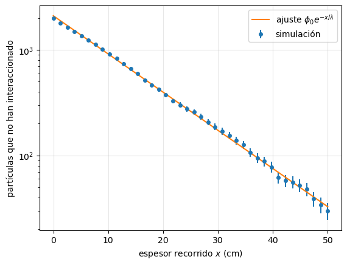
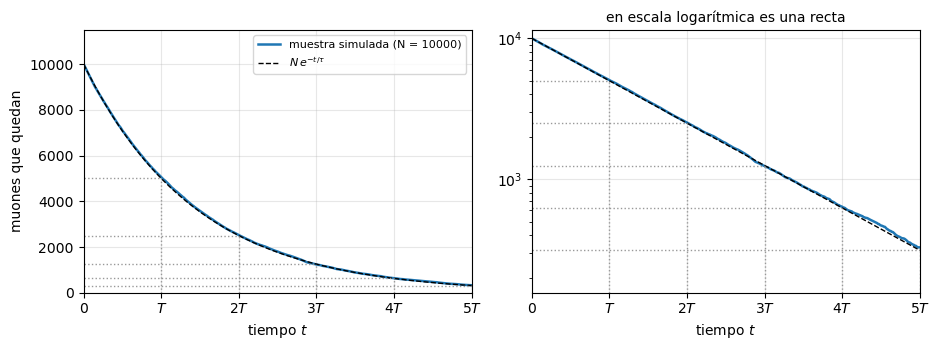
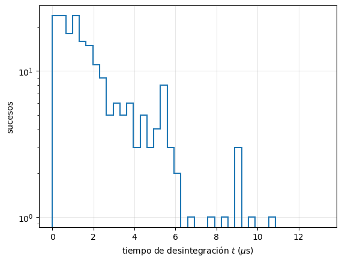
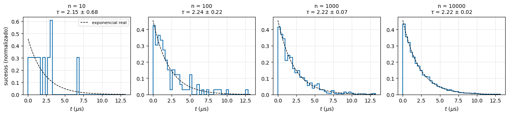
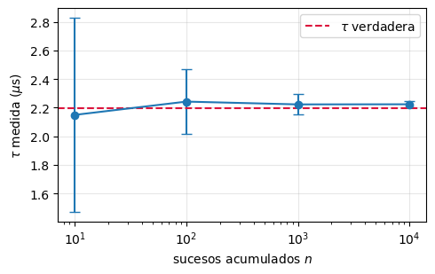
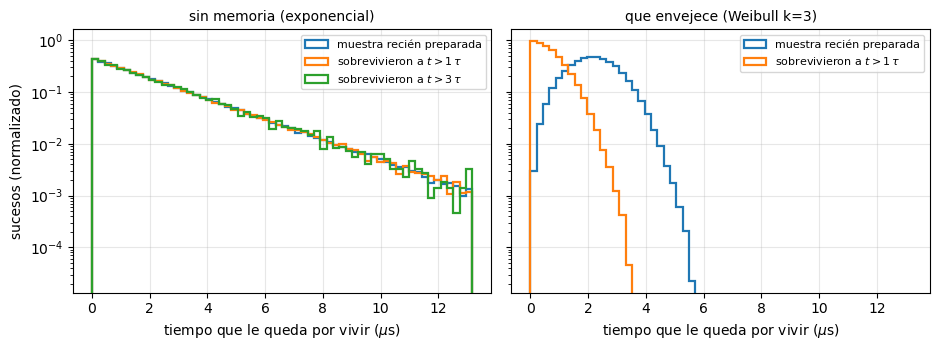
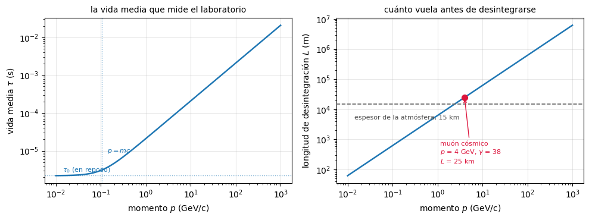
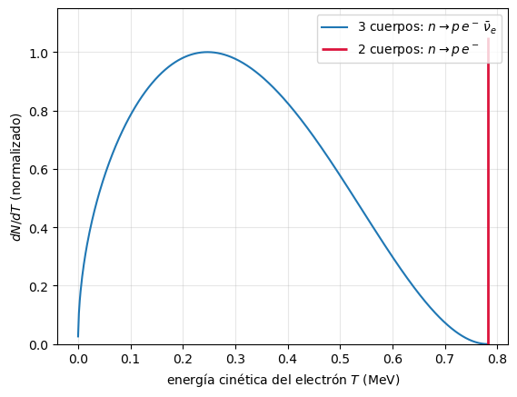
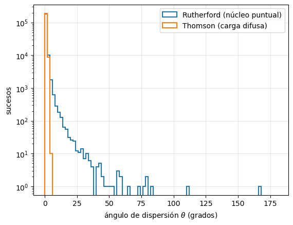

1. Introducción a Física de Partículas#
# Configuración e imports. El código auxiliar está en el paquete notebooks/fnyp/
%matplotlib inline
%reload_ext autoreload
%autoreload 2
import numpy as np
import matplotlib.pyplot as plt
import scipy.constants as units
try:
from fnyp import common as fn
from fnyp import introduccion as t1
from fnyp import simula as sim
except ModuleNotFoundError: # en Google Colab hay que traerse antes el repositorio
!git clone -q https://github.com/jahernando/USC-FNyP.git
import sys; sys.path.append('USC-FNyP/notebooks')
from fnyp import common as fn
from fnyp import introduccion as t1
from fnyp import simula as sim
fn.version()
Last version Fri Sep 11 13:57:05 2026
1.1. Objetivos#
Una visión del campo de la Física de Partículas:
su propósito, sus relaciones con otras ramas de la Física y los laboratorios principales.
El lenguaje mínimo: cómo escribimos una interacción, qué se conserva, en qué unidades trabajamos, y cómo medimos cuánto y cuándo ocurre algo (sección eficaz y vida media).
Radiaciones \(\alpha\), \(\beta\), \(\gamma\): las tres interacciones vistas desde el núcleo.
De los núcleos a los quarks: cómo se descubre que algo tiene estructura.
Una introducción general del Modelo Estándar:
de los componentes de la materia (fermiones) y de las fuerzas (bosones) que median entre ellos.
La cinemática relativista (cuadrimomento, masa invariante, variables de Mandelstam) y las simetrías discretas \(C\) y \(P\) se tratan en temas posteriores.
1.2. Sobre la Física de Partículas#
La Física de Partículas es la rama de la Física que estudia los corpúsculos más pequeños (algunos de ellos quizás elementales) de la Naturaleza y las interacciones que median entre ellos.
1.2.1. Escala de la Física de Partículas#
La siguiente figura muestra las diferentes escalas en distancia (m). Conforme reducimos la escala pasamos del sólido, al átomo, al núcleo, y finalmente a las partículas.
|

La escala en distancia que corresponde a la Física de Partículas es inferior al femtometro, \(< 10^{-15}\) m.
Profundizamos en el interior de las partículas usando otras partículas como sonda, por ejemplo electrones.
Para explorar distancias cada vez más pequeñas, por la relación de de Broglie, \(\lambda = h /p\), necesitamos sondas con energías cada vez mayores.
La siguiente tabla muestra las escalas típicas de distancia (m) y energía (eV):
Atómica |
Nuclear |
Partículas |
|
|---|---|---|---|
distancia (m) |
\(10^{-10}\) |
\(10^{-14}\) |
\(10^{-18}\) |
Energía (eV) |
\(1\) |
\(10^{6}\) |
\(10^{9-11}\) |
\(\mathcal{O}\)(eV) |
\(\mathcal{O}\)(MeV) |
\(\mathcal{O}\)(GeV-TeV) |
El rango de energías de la Física de Partículas es \(>\) GeV.
Por eso a la Física de Partículas también se la conoce como Física de Altas Energías.
En general, a estas energías, las partículas son relativistas. Así que nuestro marco será la física cuántica y relativista.
[>] Taller — ¿Cuánta energía para ver un fermi?
La tabla anterior empareja una escala de distancia con una de energía. Comprueba de dónde sale ese emparejamiento.
Usando la relación de de Broglie en orden de magnitud, \(\lambda \sim \hbar/p\), y el factor de conversión \(\hbar c = 0.197\) GeV fm:
¿Qué momento necesita una sonda para resolver una distancia de \(1\) fm, el tamaño del núcleo?
¿Y para resolver \(10^{-3}\) fm, el alcance de la interacción débil?
¿Entiendes ahora por qué el LHC trabaja a TeV?
Solución
De \(\lambda \sim \hbar / p\) se obtiene \(p \sim \hbar c / \lambda\) (en unidades naturales):
\(p \sim 0.197\,\mathrm{GeV\,fm} / 1\,\mathrm{fm} \approx 0.2\) GeV. Basta con energías de cientos de MeV: son las de la Física Nuclear.
\(p \sim 0.197 / 10^{-3} \approx 200\) GeV. Ya estamos en la escala electrodébil.
Cada factor 10 en resolución cuesta un factor 10 en energía. Explorar por debajo de \(10^{-19}\) m exige TeV, y por eso los aceleradores son cada vez mayores y más caros.
1.2.2. Metodología#
Estudiamos las interacciones de las partículas mediante dos tipos de experimentos: dispersión (scattering) o colisiones.
|
|
Esquema de dispersión |
Esquema de colisión |

Literalmente lanzamos haces de partículas (principalmente \(e, p, \nu\)) a muy altas energías (GeV-TeV) contra blancos (formados por otras partículas, principalmente nucleones) y observamos las partículas que se producen y sus distribuciones en energía y angulares.
1.2.3. Física de Altas energías y aceleradores#
En general la materia ordinaria, a excepción de los rayos cósmicos, no es relativista.
¿Cómo podemos obtener haces de partículas a altas energías?
Mediante aceleradores de partículas como el LHC [>], o mediante los rayos cósmicos que alcanzan la Tierra (principalmente protones, pero también neutrinos) producidos en estructuras del Cosmos que actúan como aceleradores naturales.
Por ejemplo el detector IceCube [>] detecta interacciones de neutrinos atmosféricos, solares y cósmicos.
[>] Taller — Cómo se acelera y cómo se detecta
Antes de seguir, dedica diez minutos a ver cómo son de verdad estas máquinas:
Mientras los ves, anota: ¿qué se acelera y hasta qué energía? ¿Qué se detecta en realidad, la partícula o el rastro que deja? ¿Por qué IceCube tiene que ser tan grande?
Pistas para la discusión
El LHC acelera protones (y iones pesados) hasta 6.8 TeV por haz.
Nunca «vemos» la partícula: vemos la energía que deposita al atravesar el detector (ionización, luz de centelleo, luz Cherenkov…). Todo lo demás es reconstrucción.
IceCube es enorme porque la sección eficaz del neutrino es minúscula: para observar unos pocos sucesos hay que poner una cantidad de blanco descomunal. Sección eficaz pequeña se compensa con muchos núcleos blanco — justamente \(\nu = \sigma N_b \phi_a\).
1.2.4. Partículas y Cosmología#
La Física de Partículas está muy relacionada con la Cosmología.
Durante los primeros segundos del Universo, éste se componía de una sopa de partículas.
|
Esquema de la evolución del Universo [PDG] |

Conforme el Universo se enfrió, las partículas crearon primero bariones, luego núcleos, átomos, y finalmente las estrellas y galaxias.
A partir de \(10^{-32}\) s después del Big Bang, el Universo se rige por el Modelo Estándar hasta 100 s después cuando empiezan a formarse núcleos.
Detengámonos, por ejemplo, en la desintegración del neutrón, la desintegración \(\beta\)
Después de su creación, el neutrón vive aproximadamente 15 minutos (\(\tau = 878.4\) s), tiempo suficiente, afortunadamente, para que se formasen los primeros núcleos de helio estables, lo que sucedió a los pocos minutos del Big Bang.
[>] Taller — Y si el neutrón viviera menos
El neutrón libre vive unos 15 minutos, y los primeros núcleos de helio se formaron en los primeros minutos tras el Big Bang. Es una coincidencia muy ajustada.
Piensa qué Universo tendríamos si la vida media del neutrón fuese de 1 segundo.
Solución
Prácticamente todos los neutrones se habrían desintegrado antes de que el Universo se enfriara lo suficiente para formar núcleos. Tendríamos un Universo casi exclusivamente de hidrógeno: sin helio primordial, y con una historia estelar y química radicalmente distinta.
La composición del Universo depende de un número, \(\tau_n\), que es consecuencia de la interacción débil y de la pequeña diferencia de masa entre \(n\) y \(p\).
Podemos decir por lo tanto que existe una relación de continuidad entre ramas de la física:
El Instituto Galego de Física de Altas Enerxías, IGFAE, cubre las tres ramas y sus posibles aplicaciones. Puedes explorar su página web para más información.
1.2.5. Relación entre teoría, experimentos y detectores#
La Física de Partículas involucra a la física teórica, experimental y la de detectores.
Las tres son esenciales y se complementan:
Los avances en detección hacen posible nuevos descubrimientos
Los descubrimientos marcan las líneas permitidas de las teorías
La teoría indica qué experimentos son de interés
Pero no únicamente: la Física de Partículas necesita también de la ingeniería, la química y la computación.
1.2.6. La gran ciencia#
Los aceleradores y los experimentos de partículas son grandes construcciones, en muchas ocasiones únicas y singulares, que requieren de la participación de cientos o miles de científicos y una gran financiación.
Los experimentos son muy complejos. Su planificación, construcción y explotación duran a veces décadas. Por ejemplo, ATLAS en el LHC,
|
Imagen del detector ATLAS durante su construcción [ATLAS] |

es uno de los mayores experimentos construidos y en él trabajan cerca de 3000 físicos de todo el mundo.
1.2.7. Los grandes Laboratorios#
Los experimentos de Física de Partículas tienen lugar principalmente en grandes laboratorios internacionales.
El CERN, en Ginebra, Suiza, fundado en los años 50 del siglo XX, es desde los 80 el principal laboratorio de Física de Partículas. El CERN es un gran campus europeo de investigación donde han tenido lugar experimentos esenciales en Física de Partículas, avances fundamentales como la aparición de la WWW, y descubrimientos como los de los bosones vectoriales \(W^\pm, Z^0\) y el Higgs.
Desde el 1 de enero de 2026 el director general del CERN es Mark Thomson, autor de uno de los libros de referencia de estas notas, [MT]. Le precedió Fabiola Gianotti, directora general entre 2016 y 2025.
F. Gianotti, directora general del CERN entre 2016 y 2025 |
M. Thomson, director general desde 2026 |
Los principales laboratorios de partículas son:
basados en aceleradores:
CERN (Ginebra, Suiza).
Fermilab (Chicago, Illinois), SLAC (Stanford, California), Brookhaven (New York)
KEK (Japón)
y subterráneos:
[>] Taller — Elige un laboratorio
Escoge uno de los laboratorios de la lista y averigua:
¿Qué experimento en activo alberga hoy y qué mide?
¿Participa algún grupo español? (Prueba con la web del IGFAE.)
Los cuatro últimos de la lista son subterráneos. El Laboratorio Subterráneo de Canfranc está bajo el Pirineo, con vídeos aquí. ¿Por qué se mete un laboratorio debajo de una montaña?
Solución de la pregunta 3
La roca actúa de blindaje frente a los rayos cósmicos. Bajo unos 800 m de roca el flujo de muones cae unos cuatro órdenes de magnitud.
Eso es imprescindible cuando se buscan sucesos rarísimos —materia oscura, o la desintegración doble beta sin neutrinos— en los que un solo muón cósmico al día ya sería un fondo insoportable. La estrategia es la contraria a la del LHC: allí se busca producir muchísimos sucesos; aquí, eliminar todo lo que no sea la señal.
1.2.8. Aplicaciones prácticas#
Las técnicas de construcción de los detectores y de desarrollo de los algoritmos de tratamiento de datos han dado lugar a aplicaciones importantísimas en otros campos:
en Física Médica, como por ejemplo, el PET, que detecta en coincidencia los dos fotones de aniquilación, los chips de píxeles Medipix del CERN, que han dado lugar al TAC en color, o la terapia hadrónica.
El Centro de Protonterapia de Galicia, junto al Hospital Gil Casares de Santiago, será el primer centro público de protonterapia de España.
o la aparición de la World Wide Web (WWW), quizás uno de los momentos revolucionarios de la Humanidad.
La web se desarrolló en el CERN para poder presentar y compartir la información.
Con el simulador del navegador en modo línea del CERN puedes navegar la web de hoy tal y como se veía en 1992.
1.3. Interludio: el lenguaje mínimo#
Antes de entrar en la fenomenología necesitamos unas pocas herramientas: cómo se escribe una interacción, qué cantidades se conservan, en qué unidades trabajamos, y cómo medimos cuánto ocurre algo (la sección eficaz) y cuándo (la vida media).
De relatividad usamos lo justo: dos números, \(\beta\) y \(\gamma\), y la transformación de Lorentz que se escribe con ellos. El formalismo completo —cuadrivectores, cuadrimomento e invariantes— viene en el tema de cinemática.
1.3.1. Interacciones#
Las interacciones, tanto las nucleares como las de las partículas, las describimos mediante ecuaciones como la siguiente:
donde \(a, b\) son las partículas iniciales y \(c, d\) son las finales.
O en las desintegraciones:
donde la partícula \(a\) se desintegra a las partículas \(b, \, c, \, d\)
Por ejemplo: $\( \alpha + \, {}^9\text{Be} \;\longrightarrow\; \,{} ^{12}\text{C} + \, n \)\( \)\( n \to p \, + e^- + \bar{\nu}_e \)$
Nota: En el primer ejemplo se produce una reordenación de las partículas en los núcleos, pero en el segundo caso, toma nota de que se destruye una partícula (el \(n\)) y se crean tres: \(p, e^-, \bar{\nu}_e\)
1.3.2. Sistema del laboratorio y centro de masas#
Las interacciones las referimos habitualmente a dos sistemas de referencia:
sistema del centro de masas (la suma de los momentos lineales de las partículas iniciales es cero)
sistema de laboratorio (una de las partículas iniciales está en reposo, típicamente \(b\)).
|
colisión en el centro de masas (izda) y en blanco fijo (derecha) de dos partículas \(a, \, b\). |

1.3.3. Cambio de sistema: \(\beta\) y \(\gamma\)#
Cambiar de observador no es inocuo: hay cantidades que cambian de valor al pasar de un sistema a otro. Las cantidades que no cambian —los invariantes— las desarrollamos en el tema de cinemática. Aquí basta con dos números.
Si un sistema se mueve respecto de otro con velocidad \(v\), definimos
El factor de Lorentz \(\gamma\) mide cuánto se aparta el movimiento del caso no relativista: vale \(\gamma \simeq 1\) cuando \(v \ll c\), y crece sin límite cuando \(v \to c\). En el LHC, un protón de 6.8 TeV tiene \(\gamma \approx 7000\).
1.3.4. Los sistemas \(\Sigma\) y \(\Sigma'\)#
La transformación de Lorentz relaciona el espacio-tiempo \((t, {\bf r})\) que mide un observador en un sistema inercial \(\Sigma\) con el \((t', {\bf r}')\) que mide otro en \(\Sigma'\), que se desplaza respecto del primero con velocidad \(v\) en la dirección \(z\).
Sistemas inerciales: \(\Sigma'\) se desplaza con velocidad \(v\) respecto de \(\Sigma\) [MT2.2] |
Einstein postuló que la velocidad de la luz, \(c\), es la misma en los dos sistemas, y que nada puede viajar más rápido que ella, \(v < c\). Un destello emitido en \(t = t' = 0\), cuando los orígenes coinciden, cumple entonces
Esa condición se satisface si las coordenadas están relacionadas por
donde \(\beta\) y \(\gamma\) son los dos números que acabamos de definir. La forma matricial compacta de esta transformación la escribimos más abajo, una vez introducidas las unidades naturales.
1.3.5. Cantidades conservadas e invariantes#
Los físicos buscamos cantidades objetivas, que varios observadores (al menos entre sistemas de referencia Lorentz) midan lo mismo: son las cantidades invariantes.
Y buscamos también cantidades que valgan lo mismo antes y después de la interacción o de la desintegración: son las cantidades conservadas.
Son dos propiedades independientes:
no invariante |
invariante |
|
|---|---|---|
no conservada |
La energía cinética |
la suma de las masas |
conservada |
la energía, el momento lineal, el momento angular |
la carga eléctrica, la masa de cada partícula y la masa invariante del sistema |
La energía se conserva, pero cada observador le asigna un valor distinto. Con la masa de una partícula pasa lo contrario: todos los observadores miden la misma, pero la suma no se conserva en la interacción. La carga eléctrica total y la masa invariante del sistema sí son las dos cosas a la vez.
En este tema recorremos la columna de las conservadas. La de los invariantes —masa invariante, variables de Mandelstam— la desarrollamos en el tema de cinemática.
[>] Taller — ¿Y si no se conservasen?
¿Qué crees que pasaría si no se conservase la energía? ¿Y si no se conservase la carga eléctrica?
Solución
Sin conservación de la energía podríamos construir un móvil perpetuo: bastaría llevar un sistema por un ciclo cerrado y recuperar más energía de la invertida. Por el teorema de Noether, eso equivale a decir que los fenómenos físicos cambian con el tiempo: un experimento hecho hoy y repetido mañana daría resultados distintos, y la propia idea de ley física se vendría abajo.
Sin conservación de la carga el electrón podría desintegrarse, por ejemplo en \(e^- \to \nu_e + \gamma\), que respeta el número leptónico y está permitido energéticamente. Los átomos no serían estables y no habría química. El límite experimental sobre esa desintegración es enorme, \(\tau > 10^{28}\) años.
En los dos casos la moraleja es la misma: las leyes de conservación no son detalles técnicos, son lo que hace que el Universo tenga estructuras estables y que la física sea posible.
1.3.5.1. Conservadas: las simetrías continuas#
Sabemos por el teorema de E. Noether que por cada simetría continua que presenta un sistema físico se conserva una cantidad asociada.
En este caso para:
invariancia bajo traslaciones temporales, conservación de la energía.
invariancia bajo traslaciones espaciales, conservación del momento lineal.
invariancia bajo rotaciones, conservación del momento angular.
1.3.5.2. Unidades naturales#
¡Cuidado! En física de partículas usamos unidades naturales, esto es \(c = 1\) y \(\hbar = 1\).
Las masas, los momentos y las energías se miden entonces en las mismas unidades (eV, MeV, GeV), y escribimos
Las \(c\) se reponen cuando hagan falta por análisis dimensional. Para los cálculos numéricos es cómodo recordar
Es la convención del resto del tema y de la asignatura.
Con \(\hbar = c = 1\), toda magnitud pasa a ser una potencia de la energía, y la unidad de referencia es el GeV:
magnitud |
SI |
con \(\hbar, c\) |
en NU |
ejemplo |
|---|---|---|---|---|
energía |
kg m\(^2\) s\(^{-2}\) |
GeV |
GeV |
\(E = 1\) GeV |
momento |
kg m s\(^{-1}\) |
GeV\(/c\) |
GeV |
\(\mathrm{p} = 1\) GeV |
masa |
kg |
GeV\(/c^2\) |
GeV |
\(m_p = 0.938\) GeV |
tiempo |
s |
\(\hbar/\)GeV |
GeV\(^{-1}\) |
\(\tau_\mu = 3.3 \cdot 10^{18}\) GeV\(^{-1}\) |
longitud |
m |
\(\hbar c/\)GeV |
GeV\(^{-1}\) |
\(r_p \simeq 4.1\) GeV\(^{-1}\) |
sección eficaz |
m\(^2\) |
\((\hbar c/\)GeV\()^2\) |
GeV\(^{-2}\) |
1 mb \(= 2.6\) GeV\(^{-2}\) |
Nótese que tiempo y longitud tienen la misma dimensión, \(\mathrm{GeV}^{-1}\), y que la vida media y la anchura de desintegración son una la inversa de la otra, \(\Gamma = 1/\tau\).
Los factores de conversión que conviene recordar:
Para volver al SI se reponen los \(\hbar\) y \(c\) que hagan falta por análisis dimensional. Por ejemplo, el radio del protón: \(4.1 \; \mathrm{GeV}^{-1} \times 0.197 \; \mathrm{GeV \, fm} = 0.81\) fm.
1.3.6. El cambio de sistema, en unidades naturales#
Con \(c = 1\) la transformación de Lorentz de la sección anterior se escribe de forma compacta. De \(\Sigma\) a \(\Sigma'\), que se mueve con velocidad \(\beta\) en \(z\):
Toda la matriz está hecha con \(\gamma\) y \(\gamma\beta\): las direcciones transversales no se tocan, y el tiempo y la coordenada longitudinal se mezclan entre sí.
La transformación inversa, \(\Sigma' \to \Sigma\), es la misma con el signo de la velocidad cambiado:
¡simplemente la velocidad cambia de signo!
1.3.6.1. De la partícula en reposo al laboratorio#
Una partícula de masa \(m\) en reposo tiene energía \(E' = m\) y no tiene momento, \({\bf p}' = {\bf 0}\). Otro observador inercial le mide una energía \(E\) y un momento \({\bf p}\). Esos cuatro números forman el cuadrimomento, \(p = (E, {\bf p})\).
El cuadrimomento se transforma igual que el cuadrivector \((t, {\bf r})\): \(E\) hace de componente temporal y \({\bf p}\) de componente espacial.
Sea \(\Sigma'\) el sistema en que la partícula está en reposo, con \((E', {\bf p}') = (m, {\bf 0})\). Para el observador del laboratorio, \(\Sigma\), que la ve moverse con velocidad \(\beta\) en \(z\), basta aplicar la transformación \(\Sigma' \to \Sigma\):
Es decir, \(E = \gamma \, m\) y \(\mathrm{p} = \gamma \beta \, m\), de donde salen las relaciones de trabajo, que dan \(\gamma\) y \(\beta\) a partir de lo que mide el detector:
Nótese que \(\gamma\) y \(\beta\) no son propiedades de la partícula, sino de la partícula vista por un observador. La masa \(m\) sí es suya.
Y eliminando \(\beta\) y \(\gamma\) entre las dos expresiones, \(E = \gamma m\) y \(\mathrm{p} = \gamma\beta m\), se obtiene la ecuación de Einstein:
Esa combinación es el cuadrado de la norma del cuadrimomento, \(p^2 \equiv E^2 - \mathrm{p}^2 = m^2\), y es invariante: todos los observadores miden la misma masa, aunque cada uno mida un \(E\) y un \(\mathrm{p}\) distintos. No es casualidad: las transformaciones de Lorentz son justamente las que preservan la norma de los cuadrivectores.
Es la primera cantidad invariante que encontramos, y la más importante del curso: en el tema de cinemática la generalizamos a sistemas de varias partículas (la masa invariante) con la que se descubren las partículas.
Y definimos la energía cinética, \(T\), como:
[>] Taller — ¿Por qué $(E, {\bf p})$ se transforma como $(t, {\bf r})$?
Acabamos de aplicar a \((E, {\bf p})\) la matriz de Lorentz, que estaba definida para \((t, {\bf r})\). Vamos a justificarlo.
El momento newtoniano, \({\bf p} = m \, \mathrm{d}{\bf r} / \mathrm{d}t\), no nos vale en sistemas relativistas: el numerador se transforma, pero el denominador \(\mathrm{d}t\) también. La salida es dividir por un tiempo en el que todos los observadores estén de acuerdo: el tiempo propio \(\tau\), el que marca un reloj que viaja con la partícula.
Partiendo de \(\mathrm{d}\tau^2 = \mathrm{d}t^2 - \mathrm{d}{\bf r}^2\), comprueba que \(\mathrm{d}\tau\) es invariante Lorentz y que \(\mathrm{d}t / \mathrm{d}\tau = \gamma\).
Definimos el cuadrimomento como
¿Por qué \(p^\mu\) tiene que transformarse con la misma matriz que \(x^\mu\)? (Fíjate en qué es invariante y qué no en esa definición.)
Calcula las cuatro componentes de \(p^\mu\). ¿Qué son?
Calcula \(E^2 - {\bf p}^2\). Y desarrolla \(E = \gamma m\) para \(v \ll 1\): ¿por qué llamamos energía a la componente temporal?
Solución
\(\mathrm{d}\tau^2 = \mathrm{d}t^2 - \mathrm{d}{\bf r}^2\) es justo la combinación que la transformación de Lorentz deja igual (la misma que \(c^2t^2 - {\bf r}^2\) del principio): todos los observadores calculan el mismo \(\mathrm{d}\tau\), aunque cada uno mida su propio \(\mathrm{d}t\) y su propio \(\mathrm{d}{\bf r}\). Sacando factor común \(\mathrm{d}t\),
que no es más que la dilatación temporal: \(\mathrm{d}\tau\) es el tiempo propio.
\(\mathrm{d}x^\mu = (\mathrm{d}t, \mathrm{d}{\bf r})\) se transforma con la matriz de Lorentz por definición: es una diferencia de coordenadas y la transformación es lineal. Al construir \(p^\mu\) solo lo hemos multiplicado por dos invariantes, la masa \(m\) y el número \(1/\mathrm{d}\tau\), iguales para todos los observadores. Multiplicar por algo que no cambia no puede estropear una ley de transformación, así que \(p^\mu\) se transforma igual que \(x^\mu\). Lo hereda; no hay que demostrar nada nuevo.
Usando \(\mathrm{d}t/\mathrm{d}\tau = \gamma\) y \(\mathrm{d}{\bf r}/\mathrm{d}\tau = (\mathrm{d}{\bf r}/\mathrm{d}t)(\mathrm{d}t/\mathrm{d}\tau) = \gamma {\bf v}\):
La componente temporal es la energía y las tres espaciales el momento, tal como los hemos usado arriba.
La norma reproduce la ecuación de Einstein:
Y a baja velocidad, con \(\gamma \simeq 1 + \tfrac{1}{2} v^2\),
energía en reposo más energía cinética newtoniana. Por eso identificamos esa componente con la energía.
La moraleja, que reaparece en todo el curso: (invariante) \(\times\) (cuadrivector) es un cuadrivector. Ojo con los nombres: el cuadrimomento \(p^\mu\) no es invariante —cada observador mide un \((E, {\bf p})\) distinto—; lo invariante es su norma, \(p^2 = m^2\).
1.3.6.2. Cantidades conservadas#
En una interacción \(a + b \to c + d\) se conservan por separado la energía y el momento lineal:
Como acabamos de ver, la energía y el momento lineal se transforman juntos: son las cuatro componentes de un mismo objeto, el cuadrimomento. En el tema de cinemática lo desarrollamos y vemos cuánto simplifica las cuentas tratarlas juntas.
En general, para cualquier número de partículas, \(\sum_i^{iniciales} {\bf p}_i = \sum_j^{finales} {\bf p}_j\). Y en el sistema del centro de masas ambas sumas son nulas.
|
|
momento en el sis. lab |
momento en el sis. c.m. [M. Caamaño] |


[>] Taller — Lee los diagramas
En las dos figuras anteriores:
¿Qué valor tiene \({\bf p}_b\)? ¿Y \({\bf p}'_b\)?
¿Cuánto vale \({\bf p}'_c + {\bf p}'_d\)?
¿Puede ser nulo \({\bf p}_c + {\bf p}_d\) en el sistema laboratorio?
Solución
\({\bf p}_b = 0\): en el laboratorio la partícula \(b\) es el blanco fijo, está en reposo, y por eso en la figura no le corresponde ninguna flecha. En el centro de masas, \({\bf p}'_b = - {\bf p}'_a\); ésa es precisamente la definición del c.m., que el momento lineal total inicial sea nulo.
\({\bf p}'_c + {\bf p}'_d = 0\), por conservación del momento lineal: si la suma era cero antes, lo sigue siendo después. En el c.m. las partículas finales salen siempre espalda contra espalda.
No. En el laboratorio \({\bf p}_c + {\bf p}_d = {\bf p}_a \neq 0\): el sistema arrastra el momento de la partícula incidente. Ésta es la razón de que en blanco fijo una parte de la energía se «desperdicie» en el movimiento del conjunto y no esté disponible para crear masa.
En el caso de la conservación del momento angular ¡debemos considerar el espín de las partículas!
donde \(J\) es el espín de cada partícula y \(\ell\) el momento angular orbital relativo del par. Ojo: es una composición de momentos angulares, no una suma escalar.
El momento angular orbital lo fija el parámetro de impacto \(d\), la distancia entre la trayectoria de \(a\) y el blanco: \(\ell = d \, \mathrm{p}\).
|
|
parámetro de impacto en el sis. lab |
y en el sis. c.m. [M. Caamaño] |


1.3.6.3. El valor \(Q\) de la reacción#
La energía y el momento se conservan, pero la suma de las masas no: las partículas finales no tienen por qué sumar la misma masa que las iniciales, y la diferencia se convierte en energía cinética o al revés.
Definimos el valor \(Q\) de la reacción \(a + b \to c + d\) como la diferencia de masas iniciales y finales:
que es la energía liberada tras la interacción (si \(Q>0\)), o bien la energía cinética mínima en el centro de masas, \(|Q|\), para que la interacción pueda tener lugar (si \(Q<0\)).
En el caso de las desintegraciones: \(a \to b + c + d\), para que tenga lugar debe cumplirse que:
Con esa energía mínima las partículas se crean en reposo, sin movimiento, en el c.m.
Ojo: \(Q\) es la energía liberada o de la reacción, no la energía de la interacción: la energía disponible en el centro de masas es \(\sqrt{s}\), que veremos en el tema de cinemática. Para la carga eléctrica usaremos \(q\).
[>] Taller — La $Q$ de la desintegración del neutrón
Con las masas (en MeV): \(m_n = 939.565\), \(m_p = 938.272\), \(m_e = 0.511\), y \(m_\nu \approx 0\), calcula:
La \(Q\) de \(n \to p + e^- + \bar{\nu}_e\). ¿Qué fracción de la masa del neutrón es?
¿Y la \(Q\) del proceso análogo sobre un protón libre, \(p \to n + e^+ + \nu_e\)?
¿Qué energía cinética máxima puede llevarse el electrón?
Solución
\(Q = m_n - m_p - m_e = 939.565 - 938.272 - 0.511 = 0.782\) MeV. Es el \(0.08\%\) de \(m_n\): el neutrón se desintegra por muy poco margen. Si la diferencia \(m_n - m_p = 1.293\) MeV fuese menor que \(m_e = 0.511\) MeV, el neutrón libre sería estable y la química del Universo sería otra.
\(Q = m_p - m_n - m_e = -1.804\) MeV \(< 0\): prohibido. El protón libre no se desintegra. Dentro de un núcleo sí puede ocurrir, porque la energía de ligadura cambia el balance: es la desintegración \(\beta^+\).
\(T_e^{\mathrm{max}} = Q = 0.782\) MeV, cuando el neutrino se lleva energía nula. (Estrictamente hay que descontar el retroceso del protón, pero como \(m_p \gg Q\) es despreciable.) Ese es el punto final del espectro \(\beta\), y medirlo con precisión es una de las maneras de buscar la masa del neutrino.
Fíjate en que esta \(Q\) tan pequeña es la que explica que el neutrón viva 15 minutos, una eternidad para una desintegración débil. Volveremos sobre ello.
1.3.7. Sección eficaz#
Una buena parte de los experimentos en Nuclear y Partículas son de dispersión: lanzamos partículas sonda contra un blanco de otras partículas. Y estudiamos la dispersión de las partículas sonda \(a\) o las interacciones \(a + b \to c + d\).
|
ilustración de sección eficaz diferencial [M.Caamaño] |

Para ello determinamos primero el número de interacciones por segundo que tienen lugar. Respecto al flujo de partículas sonda y al número de partículas blanco, definimos la sección eficaz —en el caso de experimentos en blanco fijo— como:
donde \(\nu\) es el número de interacciones de un determinado tipo por segundo, \(a + b \to c + d\), \(N_b\) es el número de partículas blanco, y \(\phi_a\) el flujo de partículas sonda, esto es, el número de sondas por segundo y por unidad de área, \(\phi_a = (N_a/t)/S\), donde \(S\) es el área de exposición.
La sección eficaz tiene dimensiones de área \(\mathrm{m}^2\) y la unidad habitual es el barn \(b = 10^{-24}\, \mathrm{cm}^2\)
En muchas ocasiones consideramos la sección eficaz diferencial respecto a la energía de la partícula sonda:
O respecto al ángulo de dispersión
|
|
ilustración de sección eficaz diferencial [M. Caamaño] |
[Wiki] |


1.3.7.1. Blancos extensos#
¿Qué pasa si el blanco tiene un espesor \(d\), una densidad \(\rho\) y masa atómica \(M_B\)? ¿Cuánto se reduce el flujo de partículas inicial \(\phi_a\)?
|
Interacciones en un blanco extenso [M. Caamaño] |

Solución:
En una rodaja de espesor \(\Delta x\) hay
núcleos blanco. Por la definición de sección eficaz, el número de interacciones por segundo en la rodaja es
Cada interacción saca una partícula del haz. Y como el flujo es un ritmo por unidad de área, la pérdida de flujo es ese ritmo dividido por \(S\):
donde el área de exposición se cancela. Esto es:
donde:
que corresponde a la longitud de interacción. Con la densidad de núcleos blanco \(n = \rho \, N_A / M_B\) queda \(\lambda = 1/(\sigma \, n)\), la forma habitual del recorrido libre medio.
[>] Taller — Mide la longitud de interacción
Acabas de deducir que el flujo cae como \(\phi(x) = \phi_0 \, e^{-x/\lambda}\). Ahora mídelo, como haría un experimento.
La simulación lanza \(n\) partículas contra un blanco y registra a qué profundidad interacciona cada una. Contando las supervivientes reconstruye \(\phi(x)\) y ajusta una exponencial.
¿Recupera la \(\lambda\) de entrada?
Baja a
n=100. ¿Sigue funcionando? ¿Cuánto te fías del número que sale?Sube
espesora \(200\) cm. ¿Mejora o empeora el ajuste? ¿Por qué?
sim.atenuacion(n=2000, lambda_real=12., espesor=50.);
lambda de entrada = 12.00 cm
lambda medida = 12.01 cm (con n = 2000 sucesos)

1.3.8. Vida media#
Otro de los observables principales en Física Nuclear y de Partículas es el tiempo de desintegración. Antes de escribir ninguna fórmula, miremos lo que se mide.
Preparamos una muestra grande de muones, \(\mu^- \to e^- \, \bar{\nu}_e \, \nu_\mu\), y vamos contando cuántos quedan. Al cabo de un intervalo \(T\) se ha desintegrado la mitad.
¿Y en el siguiente intervalo \(T\)? ¿Se acaban?
Ejecuta la celda de abajo y cuenta: en el segundo intervalo se desintegra la mitad de los que quedaban; en el tercero, la mitad de ésos; y así indefinidamente.
¿Qué ley siguen?
¿Tienen los muones un reloj interno? ¿Guardan memoria de cuánto llevan vivos?
sim.supervivientes(n=10000, tau_real=2.197);
muestra inicial N = 10000
vida media tau = 2.197
semidesintegración T = tau ln2 = 1.523
quedan N/2^k
t = 1T 5048 5000.0
t = 2T 2530 2500.0
t = 3T 1236 1250.0
t = 4T 637 625.0
t = 5T 328 312.5

Respuesta. No se acaban. La muestra no pierde cantidades iguales, se reduce por factores iguales: un medio, un cuarto, un octavo, y nunca llega a cero. Eso es una exponencial, \(N(t) = N(0) \, 2^{-t/T}\). Ese intervalo \(T\) es el periodo de semidesintegración, al que volvemos un poco más abajo.
Y dice algo fuerte sobre el muón: los que quedan al cabo de un intervalo se comportan exactamente igual que una muestra recién creada. No hay reloj interno ni pieza que se desgaste. Mientras no se desintegra, la partícula sigue en el mismo estado y no guarda memoria de cuánto lleva en él.
Queda escribirlo:
La ley. Si la probabilidad de desintegrarse en un intervalo \(\mathrm{d}t\) no depende del pasado, es siempre la misma: \(\mathrm{d}p = \Gamma \, \mathrm{d}t\), con \(\Gamma\) la probabilidad de desintegración por unidad de tiempo. Con \(N\) partículas independientes, ¿cuántas se desintegran en \(\mathrm{d}t\)? ¿Por qué el signo menos en \(\mathrm{d}N = - \Gamma \, N \, \mathrm{d}t\)?
1.3.8.1. La ley de desintegración#
En cada \(\mathrm{d}t\) se desintegran \(N \, \mathrm{d}p\) partículas, y el signo es negativo porque las que se desintegran salen de la muestra:
Es la misma curva que acabamos de contar, \(2^{-t/T}\), escrita en base \(e\).
¿Y si el intervalo no es pequeño?
\(\mathrm{d}p = \Gamma \, \mathrm{d}t\) solo vale mientras la probabilidad sea pequeña: si en 1 s vale \(10^{-3}\), extrapolar linealmente a \(10^4\) s daría 10, que no es una probabilidad. Un intervalo finito se construye componiendo muchos intervalos pequeños, y eso es justo lo que hace integrar la ecuación.
1.3.8.2. Anchura de desintegración y vida media#
A la constante \(\Gamma\) la llamamos anchura de desintegración y a su inversa, \(\tau = 1/\Gamma\), tiempo de vida media. La ley se escribe indistintamente
tiempo de vida media |
\(\tau\) |
en s. La vida promedio, \(\langle t \rangle = \tau\), y el tiempo en que la muestra cae a \(1/e \simeq 37\,\%\) |
anchura de desintegración |
\(\Gamma\) |
en MeV. En unidades naturales \(\Gamma = 1/\tau\) es una energía; al reponer \(\hbar\), \(\Gamma = \hbar/\tau\). La usamos en partículas de vida muy corta, que vemos como resonancias de esa anchura |
Por ejemplo, el neutrón se desintegra \(n \to p + e^- + \bar{\nu}_e\) con \(\tau = 878.4\) s (unos 15 minutos); el bosón \(Z\), en cambio, tiene \(\Gamma_Z \simeq 2.5\) GeV.
[i] Vida media y periodo de semidesintegración
Son dos tiempos distintos y conviene no mezclarlos:
vida media |
\(\tau\) |
la vida promedio; la muestra cae a \(1/e \simeq 37\,\%\) |
periodo de semidesintegración, o semivida |
\(t_{1/2}\) |
la muestra cae a la mitad |
Imponiendo \(N(t_{1/2}) = N(0)/2\) en la ley exponencial:
La semivida es siempre menor que la vida media. Para el neutrón, \(\tau = 878.4\) s corresponde a \(t_{1/2} = 609\) s.
En inglés son mean lifetime (\(\tau\)) y half-life (\(t_{1/2}\)); half-life se traduce mal a menudo por «vida media». Las tablas de isótopos de Física Nuclear suelen dar \(t_{1/2}\), mientras que el PDG da \(\tau\): al comparar números, mira siempre cuál de los dos es.
En Física Nuclear esta misma constante se escribe \(\lambda\) y se llama constante de desintegración; con ella, la actividad de una muestra es \(A = \lambda N = N/\tau\), el número de desintegraciones por segundo (en becquerel).
[>] Taller — Mide una vida media
Simula la desintegración de una muestra de muones (\(\tau = 2.197\ \mu\)s) y mide \(\tau\) a partir de los datos, sin mirar el valor de entrada.
Ejecuta la primera celda. ¿A cuántas desviaciones típicas queda el valor medido del real? Vuelve a ejecutarla: la semilla es aleatoria, así que es otra toma de datos y sale otro número. ¿Cuántas veces de diez esperas quedarte a más de 1 σ?
La segunda celda acumula sucesos: el histograma de \(n=100\) contiene los 10 anteriores, y así hasta \(10^4\). ¿A partir de cuántos sucesos reconoces la forma exponencial? ¿Y a partir de cuántos dirías que la medida es fiable?
¿Cómo escala el error con el número de sucesos? Si quisieras mejorar tu medida un factor 10, ¿cuánto tendrías que aumentar la estadística?
Solución de la pregunta 3
El error escala como \(1/\sqrt{n}\): concretamente \(\sigma_\tau = \tau/\sqrt{n}\). Se ve en los títulos de los cuatro histogramas y, sobre todo, en la segunda figura: cada salto de un factor 100 en \(n\) divide la barra de error por 10.
Para ganar un factor 10 en precisión hay que multiplicar por 100 el número de sucesos. Esta ley es la que gobierna el coste de casi todo experimento de partículas: la precisión es cara, y cada dígito significativo nuevo cuesta cien veces más datos que el anterior.
sim.vida_media(n=200, tau_real=2.197);
tau de entrada = 2.1970
tau medida = 2.2757 +- 0.1609 (0.5 sigmas de la de entrada, con n = 200)

sim.vida_media_evolucion(ns=(10, 100, 1000, 10000), tau_real=2.197);
# En clase: descomenta la línea siguiente para verlo como animación.
# Ojo: no guardes el notebook con su salida (~1.5 MB por animación).
# sim.vida_media_animada(n_max=10000, tau_real=2.197)
tau de entrada = 2.1970
n = 10 -> tau = 2.1492 +- 0.6796 (0.1 sigmas)
n = 100 -> tau = 2.2421 +- 0.2242 (0.2 sigmas)
n = 1000 -> tau = 2.2225 +- 0.0703 (0.4 sigmas)
n = 10000 -> tau = 2.2234 +- 0.0222 (1.2 sigmas)


1.3.8.3. Las partículas no envejecen#
Escribamos la ley como la probabilidad de sobrevivir hasta \(t\), \(S(t) = e^{-\Gamma t}\). Cumple
que es la falta de memoria escrita como ecuación: sobrevivir un rato y luego otro más son sucesos independientes, y haber aguantado el primero no dice nada sobre el segundo. Y al revés, la exponencial es la única función monótona que lo cumple. Exponencial y ausencia de memoria son la misma cosa.
La consecuencia cuesta de aceptar: a un muón que lleva \(10 \, \mu\)s sin desintegrarse le quedan por delante los mismos \(2.2 \, \mu\)s de media que a uno recién creado. No está gastado, ni le toca ya.
Compáralo con lo que sí envejece: que una persona de 20 años llegue a los 21 no tiene la misma probabilidad que una de 90 llegue a los 91, y una bombilla encendida acumula desgaste en el filamento. Ahí el pasado sí cuenta, y la distribución de vidas no es exponencial.
[>] Taller — ¿Le toca ya?
Un muón lleva \(3\tau\) sin desintegrarse. Antes de ejecutar nada, responde:
¿Cuánto tiempo le queda de vida, en promedio? ¿Menos de \(\tau\), \(\tau\), o más de \(\tau\)?
De una muestra inicial de \(200\,000\) muones, ¿cuántos siguen vivos en \(t = 3\tau\)?
Ejecuta la celda. El panel izquierdo son partículas reales; el derecho, una población inventada que sí envejece, con la misma vida media. ¿En qué se distinguen los histogramas?
¿Cómo comprobarías experimentalmente cuál de los dos comportamientos tiene un isótopo radiactivo real?
Solución
Exactamente \(\tau\), los mismos \(2.2 \, \mu\)s que al nacer. Es lo que más cuesta aceptar: haber sobrevivido no es información sobre el futuro. La respuesta intuitiva —«le queda menos, que ya ha vivido mucho»— es la falacia del jugador.
\(200\,000 \, e^{-3} \approx 10\,000\), un 5 %.
A la izquierda los tres histogramas caen uno encima de otro: la distribución del tiempo restante no depende de la edad. A la derecha se separan y se corren hacia la izquierda: tras una vida media, a los supervivientes ya solo les quedan \(0.66 \,\mu\)s en vez de \(2.2\), y a \(3\tau\) no queda ninguno. Mira también cuántos sobreviven a \(1\tau\): un 37 % en el caso exponencial frente a un 49 % en el que envejece. La población que envejece muere de golpe, en torno a su edad típica; la que no tiene memoria muere siempre al mismo ritmo.
Midiendo \(\tau\) en una muestra recién preparada y volviendo a medirla en la misma muestra mucho después. Si la partícula envejeciera, \(\tau\) crecería o menguaría con la edad de la muestra. No lo hace: por eso funciona la datación radiométrica, y por eso es consistente entre isótopos de vidas medias muy distintas.
sim.vida_media_sin_memoria(n=200000);
vida media de entrada = 2.1970
sin memoria (exponencial)
muestra recién preparada n = 200000 les quedan 2.1969 +- 0.0049
sobrevivieron a t > 1 tau n = 73670 les quedan 2.1918 +- 0.0081
sobrevivieron a t > 3 tau n = 9954 les quedan 2.2009 +- 0.0221
que envejece (Weibull k=3)
muestra recién preparada n = 200000 les quedan 2.1970 +- 0.0049
sobrevivieron a t > 1 tau n = 98143 les quedan 0.6594 +- 0.0021
sobrevivieron a t > 3 tau n = 0 no sobrevive ninguna

1.3.8.4. La vida media depende del observador#
Volvamos a \(\tau\). Todo lo anterior —la ley exponencial, la falta de memoria— vale en el sistema en que la partícula está en reposo. Esa \(\tau_0\) es su vida media propia, y es la que aparece en las tablas del PDG.
Pero el tiempo depende del observador. En el laboratorio la partícula va a velocidad \(\beta\), sus relojes van dilatados, y la vida media que medimos es
Y lo que un detector observa no es un tiempo, sino una distancia: cuánto vuela la partícula antes de desintegrarse. Es la longitud de desintegración
Notar que aquí la longitud está en el SI (al reponer \(c\)). ¿Cómo queda en unidades naturales?
Las dos expresiones se comportan de forma muy distinta, y merece la pena verlo:
\(\tau(\mathrm{p})\) |
tiene meseta en \(\tau_0\) mientras \(\mathrm{p} \ll mc\), y crece linealmente después |
\(L(\mathrm{p})\) |
es exactamente proporcional a \(\mathrm{p}\), sin meseta, para cualquier partícula |
Para el muón, \(\tau_0 = 2.197\ \mu\)s y \(c\tau_0 = 659\) m.
t1.plot_dilatacion_temporal();
muón cósmico típico: p = 4 GeV
gamma = 37.9, beta = 0.999651
vida media en el laboratorio = 83.2 us (en reposo, 2.20 us)
longitud de desintegración = 24.9 km (sin dilatación, 0.659 km)

[>] Taller — ¿Por qué nos llegan los muones?
Los muones cósmicos se producen al chocar los protones del espacio con la alta atmósfera, a unos 15 km de altura, y se detectan de sobra a nivel del mar. Con \(\tau_0 = 2.197\ \mu\)s y \(m_\mu c^2 = 105.7\) MeV:
Si no hubiera dilatación temporal, ¿cuánto recorrería un muón en una vida media? Compáralo con los 15 km.
Un muón cósmico típico llega con \(p = 4\) GeV/c. Calcula \(\gamma\), la vida media que mide el laboratorio y la longitud de desintegración \(L\).
Con \(S = e^{-d/L}\), ¿qué fracción sobrevive a los 15 km en cada caso? ¿Cuál es la razón entre las dos?
Mira la figura: ¿por qué el panel de la izquierda tiene un codo y el de la derecha no?
Solución
\(c\tau_0 = 659\) m, y a \(\beta \simeq 1\) eso es lo que recorre. Los 15 km son 23 longitudes de desintegración: no llegaría prácticamente ninguno.
\(E = \sqrt{p^2c^2 + m^2c^4} = 4001\) MeV, así que \(\gamma = E/mc^2 = 37.9\) y \(\beta = 0.99965\). La vida media en el laboratorio es \(\tau = \gamma\tau_0 = 83\ \mu\)s —frente a los \(2.2\ \mu\)s en reposo— y \(L = \gamma\beta\, c\tau_0 = 24.9\) km.
Sin dilatación, \(S = e^{-15000/659} = e^{-22.8} = 1.3 \times 10^{-10}\). Con dilatación, \(S = e^{-15000/24900} = e^{-0.60} = 0.55\). La razón es de \(4 \times 10^9\): la mitad de los muones llega frente a prácticamente ninguno. Los muones que nos atraviesan ahora mismo son la evidencia directa de la dilatación temporal — es el experimento de Rossi y Hall (1941), que comparó el flujo de muones a distintas altitudes.
Porque en \(L = \beta c \cdot \gamma\tau_0\) los dos factores se compensan exactamente. A momento bajo, \(\gamma \to 1\) (no hay dilatación, \(\tau \to \tau_0\): ahí está la meseta del panel izquierdo) pero también \(\beta \to 0\), y la partícula no recorre nada. A momento alto, \(\beta \to 1\) se satura pero \(\gamma\) crece sin límite. El producto \(\gamma\beta = p/mc\) es lineal en \(p\) en todo el rango, y por eso \(L\) no tiene codo.
1.4. Radiación \(\alpha, \beta, \gamma\)#
1.4.1. De los griegos clásicos a nuestros días#
En el De rerum natura de Lucrecio (siglo I a.C.), el poeta romano, inspirado por Epicuro y en última instancia por Demócrito, expone su visión de la Naturaleza:
todo lo que existe está hecho de átomos y vacío.
En nuestra visión contemporánea: el mundo está constituido por partículas fundamentales y por vacío.
También argumenta que:
«Haud igitur redit ad nihilum res ulla, sed omnes dissoluuntur et in res cunctas remeare videntur.»
(Ninguna cosa vuelve a la nada: todas se disuelven y parecen regresar a otros cuerpos.)
En nuestra versión moderna: La energía ni se crea ni se destruye, se conserva. Las partículas se transforman unas en otras.
En la actualidad, nuestro conocimiento de los componentes fundamentales de la Naturaleza está contenido en el Modelo Estándar.
Clasificar y comprender las interacciones de las partículas es una tarea comunitaria que dura desde finales del siglo XIX, se inicia con el descubrimiento del electrón, y llega hasta nuestros días, siendo el último gran descubrimiento el del bosón de Higgs en 2012.
No obstante, la imagen que surge del Modelo Estándar, aunque poco intuitiva, es relativamente simple.
1.4.2. La tabla periódica#
Clasificar nos permite desvelar la estructura interna subyacente.
Mendeleev (1869) clasifica por propiedades los átomos y Moseley (1913) los ordena por Z.
|
Tabla periódica de los elementos [Wikipedia] |

La tabla periódica supone una ordenación de los elementos:
Disposición por número atómico (Z).
Periodos (filas) y grupos (columnas).
Bloques electrónicos: s, p, d, f.
1.4.3. Radiaciones α, β, γ#
A finales del siglo XIX y principios del XX se descubrieron distintos tipos de radiaciones, cuyos nombres aún se utilizan: \(\alpha, \beta, \gamma\), y que corresponden respectivamente a las interacciones fuerte, débil y electromagnética.
Estas radiaciones tienen un rango típico de energía de MeV.
1.4.4. Radiación \(\alpha\)#
La radiación nuclear la descubrió (accidentalmente) Becquerel (1896) y la estudió en detalle Marie Curie.
Henri Becquerel, físico francés, estaba estudiando la fluorescencia de sales de uranio. Creía que, al exponerse al sol, éstas emitirían rayos X.
Un día nublado, sin sol, guardó sus placas fotográficas envueltas junto con el uranio. Cuando las reveló, vio que estaban veladas.
«Les sels d’uranium émettent spontanément des rayonnements capables d’impressionner une plaque photographique à travers un papier opaque.» (H. Becquerel)
El uranio emitía una radiación invisible, espontánea, sin necesidad de excitación externa. Eso fue el nacimiento del concepto de radiactividad natural.
Actualmente el becquerel (Bq) se usa como unidad para indicar desintegraciones por segundo.
Posteriormente Marie Skłodowska Curie y su marido Pierre Curie descubrieron dos nuevos elementos mucho más radiactivos que el uranio: el polonio y el radio.
Marie acuñó el término «radiactividad».
En esta desintegración del uranio se emite una radiación \(\alpha\), es decir, un núcleo de helio (con \(Z = 2\)):
La radiación \(\alpha\) es poco penetrante.
1.4.5. Radiación \(\beta\)#
Un núcleo emite una radiación más penetrante que la \(\alpha\). En 1899 Rutherford la distingue de aquella por su poder de penetración y la llama \(\beta\); poco después, Becquerel (1900) y Kaufmann miden su relación carga/masa y la identifican: son electrones.
Con eso, la reacción parece resuelta. Por ejemplo:
El núcleo hijo es miles de veces más pesado que el electrón y su retroceso es despreciable, así que la conservación de la energía fija la energía del electrón: todos deberían salir con la misma, \(T_e \simeq Q\). El espectro debería ser una raya.
En 1914 James Chadwick lo mide con cuidado, y encuentra otra cosa: el espectro es continuo. Los electrones salen con todas las energías, desde cero hasta un valor máximo — y ese máximo coincide justo con la \(Q\) esperada.
No es un detalle técnico: es una contradicción con la conservación de la energía, medida en el laboratorio. El problema se queda sin resolver dieciséis años.
(Nota histórica: el neutrón no se descubre hasta 1932. En 1914 todo esto se escribía a nivel de núcleos; que por debajo hay un \(n \to p\) vino después.)
[>] Taller — Deduce tú lo que falta (1/2)
Este es el experimento del capítulo. Estás en 1914 y sabes esto y nada más:
la radiación \(\beta\) son electrones;
si la desintegración fuera a dos cuerpos, todos saldrían con la misma energía;
el espectro medido es continuo, y su extremo superior está en la \(Q\) esperada.
¿Qué explicaciones se te ocurren para un espectro continuo? Haz tu lista antes de seguir: hubo tres sobre la mesa, y las tres se defendieron.
Si decides que en el estado final hay una partícula más, ¿qué carga eléctrica tiene?
El neutrón, el protón y el electrón tienen espín \(1/2\). Aparte de la energía, ¿qué otro problema tiene \(n \to p + e^-\)? ¿Qué espín debe tener entonces lo que falta?
¿Por qué no la había visto nadie?
[>] Taller — Deduce tú lo que falta (2/2)
Ejecuta la celda de abajo, que compara los espectros a dos y a tres cuerpos. Usa \(Q = 0.782\) MeV, la del neutrón, que será nuestro caso de referencia; el argumento es idéntico para el \({}^{14}\)C.
Si hay una partícula invisible llevándose energía, ¿por qué el extremo del espectro sigue cayendo exactamente en \(Q\)?
Mira ese extremo. Si la partícula que falta tuviera masa, ¿cómo cambiaría esa zona? ¿Se te ocurre cómo medir esa masa?
sim.espectro_beta(Q=0.782);
2 cuerpos: una raya en T = 0.782 MeV
3 cuerpos: continuo entre 0 y Q = 0.782 MeV

Solución
Tres opciones, y ninguna era descabellada entonces:
la energía no se conserva en los procesos nucleares — la defendió Bohr;
el experimento está mal — se descartó al repetirlo con calorímetros;
falta algo en el estado final que se lleva la energía que no vemos.
Pauli eligió la tercera en 1930, en una carta que empieza «Queridas señoras y señores radiactivos» y en la que la llama «un remedio desesperado».
Neutra. La carga ya está equilibrada entre \({}^{14}\)C y \({}^{14}\)N \(+\, e^-\), así que lo que falta no puede llevarla.
El momento angular. \(n \to p + e^-\) sería \(1/2 \to 1/2 + 1/2\): de semientero a entero, imposible. Hace falta un tercer cuerpo de espín semientero, y el más simple es \(1/2\). Este argumento es independiente del de la energía y por sí solo ya exige una partícula nueva: aunque renunciaras a la conservación de la energía, el espín seguiría sin cuadrar. Por eso la opción de Bohr no salvaba nada.
Porque es neutra y su sección eficaz es minúscula: atraviesa el detector, el laboratorio y la Tierra entera sin dejar rastro. Pasaron 26 años hasta que Cowan y Reines la detectaron, en 1956, junto a un reactor nuclear.
Porque entre todos los repartos posibles de energía hay uno en el que la partícula invisible se lleva prácticamente nada: ése es el electrón más energético. Que el extremo caiga justo en \(Q\) es, de hecho, la prueba de que la energía sí se conserva.
Si tuviera masa \(m\), no podría crearse con menos energía que \(m\), así que al electrón nunca le quedarían disponibles los últimos \(m\): el espectro se cortaría en \(Q - m\) y la forma de los últimos electrones cambiaría. Medir con precisión ese extremo es exactamente como se mide hoy la masa del neutrino (experimento KATRIN, con tritio). La dificultad es que solo una fracción minúscula de los electrones cae en esa región.
Fíjate en el método, porque es el del oficio: una discrepancia en la forma de un espectro obligó a postular una partícula nueva, y dos leyes de conservación distintas —energía y momento angular— apuntaban a lo mismo. Es el razonamiento con el que hoy se busca física más allá del Modelo Estándar.
Así que en el estado final hay una cuarta partícula: neutra, ligerísima, de espín \(1/2\) y casi imposible de detectar. Pauli la postuló en 1930; Fermi la bautizó neutrino y en 1934 construyó con ella la primera teoría de la desintegración \(\beta\); Cowan y Reines la detectaron en 1956.
Escrita completa, la desintegración es
Esta última será nuestra guía para entender las desintegraciones débiles. La historia del neutrino merece su lugar aparte, y la contaremos en otra ocasión.
1.4.6. Radiación \(\gamma\)#
Finalmente, algunos núcleos emiten fotones de alta energía, penetrantes, que se denominan rayos \(\gamma\).
Como es el caso del Cobalto:
donde el \({}^{60}\mathrm{Ni}^*\) se desexcita emitiendo dos fotones, de 1.17 y 1.33 MeV.
Paul Villard, en 1900, estudiando la radiación del radio, observa un componente extremadamente penetrante que no se desvía en un campo magnético. En 1903 Rutherford lo identifica como un tercer tipo de radiación, que bautiza como rayos \(\gamma\), y establece que no son partículas cargadas (como \(\alpha\) o \(\beta\)), sino radiación electromagnética de alta energía.
Más adelante utilizaremos los diagramas de niveles para indicar las desintegraciones:
|
Diagrama de desintegración del \({}^{60}\mathrm{Co}\) [Wikipedia] |

Puedes explorar aquí otros diagramas de niveles
[>] Taller — Juega con la carta de núclidos
La carta de núclidos de la IAEA contiene todo lo que se sabe de todos los núcleos conocidos. Ábrela y busca:
El \({}^{60}\mathrm{Co}\): ¿cuál es su periodo de semidesintegración? ¿Y las energías de los dos fotones que emite el \({}^{60}\mathrm{Ni}^*\)?
El \({}^{14}\mathrm{C}\): ¿por qué sirve para datar restos arqueológicos y no, digamos, fósiles de dinosaurios?
Localiza el «valle de estabilidad». ¿Por qué los núcleos pesados estables necesitan más neutrones que protones?
Pistas
\(T_{1/2} \approx 5.27\) años; los fotones son de 1.17 y 1.33 MeV.
\(T_{1/2}({}^{14}\mathrm{C}) \approx 5700\) años. Tras unos 10 periodos (≈ 60 000 años) no queda actividad medible; un dinosaurio de 65 millones de años está fuera de rango por tres órdenes de magnitud.
La repulsión coulombiana entre protones crece como \(Z^2\), mientras que la fuerza fuerte es de corto alcance y solo liga a los vecinos. Añadir neutrones aporta atracción fuerte sin añadir repulsión eléctrica.
1.4.7. Interacciones electromagnética, débil y fuerte#
Recordemos que la energía típica de las radiaciones nucleares \(\alpha, \beta, \gamma\) es del MeV.
La radiación \(\gamma\) es electromagnética, tiene referente clásico.
La desintegración \(\beta\) es débil, tiene un rango muy pequeño, \(10^{-3}\) fm (fm = \(10^{-15}\) m), y aparece por primera vez en las reacciones nucleares. Su tratamiento es cuántico.
La desintegración \(\alpha\) es una manifestación de la interacción fuerte, la responsable de la existencia del núcleo, entre otros fenómenos, y su alcance es del fm. De nuevo su tratamiento es cuántico.
En Física Nuclear haremos un tratamiento cuántico y -en general- no relativista, mientras que en Física de Partículas, el tratamiento es cuántico y -casi siempre- relativista.
1.5. De los núcleos a los quarks#
1.5.1. Dispersión del núcleo#
En 1909, H. Geiger y E. Marsden estudiaban la dispersión de partículas alfa en una lámina de oro, y E. Rutherford sugerió estudiar si existían dispersiones a altos ángulos.
|
Esquema de dispersión [Geiger, Marsden] |

Rutherford: “It was quite the most incredible event that has ever happened to me in my life. It was almost as incredible as if you fired a 15-inch shell at a piece of tissue paper and it came back and hit you.”
Rutherford concluyó, entre otras cosas, que la mayor parte de la masa y la carga positiva del átomo se concentran en una región extremadamente pequeña, a lo que se denominó núcleo.
Trayectoria hiperbólica de la partícula \(\alpha\) [Rutherford] |
Rutherford describió la dispersión de las partículas alfa a través de la interacción electromagnética. Asumiendo que el núcleo no tenía retroceso e ignorando la interacción con los electrones, la situación es matemáticamente la misma que las soluciones de Kepler a las órbitas planetarias: la partícula alfa recorre una hipérbola. Él la resolvió por esa vía; en el taller siguiente llegamos al mismo sitio sin tocar la órbita.
La figura original del artículo de Rutherford (1911): la hipérbola completa, con las asíntotas y el ángulo de dispersión \(\theta\). |
[>] Taller — Deduce la sección eficaz de Rutherford
Acabamos de escribir la fórmula; ahora dedúcela. Sale entera de la figura de arriba, sin resolver la órbita: hacen falta las dos leyes de conservación, un argumento de simetría y algo de geometría.
Trabaja en el límite de Rutherford: núcleo fijo (sin retroceso), colisión elástica, \(E = \frac{1}{2} m v_0^2\) la energía cinética de la \(\alpha\), y \(\theta\) el ángulo de dispersión (la figura lo llama \(\vartheta\)).
El triángulo de la derecha. ¿Cuánto vale \(|\Delta {\bf p}|\) en función del momento \(p\) y del ángulo \(\theta\)?
Pista
Si la colisión es elástica y el núcleo no retrocede, \(|{\bf p}_i| = |{\bf p}_f| = p = m v_0\): el triángulo es isósceles. Pártelo por la bisectriz.
El impulso. \(\Delta {\bf p} = \int {\bf F} \, \mathrm{d}t\). ¿Qué componente de \({\bf F}\) sobrevive a la integral y cuál se cancela?
Pista
La trayectoria es simétrica respecto de la bisectriz del ángulo de dispersión. Mira qué le pasa a cada componente al pasar de la mitad de entrada a la de salida.
La integral. Cambia la variable de integración de \(t\) a \(\varphi\). ¿Qué le ocurre entonces al \(1/r^2\) de la ley de Coulomb?
Pista
Aquí entra la segunda ley de conservación: el momento angular respecto del núcleo, \(L = m v_0 b = m r^2 \dot\varphi\). Despeja \(\mathrm{d}t\) de ahí y sustituye.
Los límites. Midiendo \(\varphi\) desde la bisectriz, ¿entre qué dos valores hay que integrar?
Pista
La \(\alpha\) viene del infinito y se va al infinito, así que los límites los fijan las asíntotas. Mide en la figura el ángulo que forman con la bisectriz.
El final. Iguala 1 con 4, despeja el parámetro de impacto \(b(\theta)\) y llega a la sección eficaz.
Pista
\[ \frac{d\sigma}{d\Omega} = \frac{b}{\sin\theta} \left| \frac{db}{d\theta} \right| \]y \(\sin\theta = 2 \sin\frac{\theta}{2} \cos\frac{\theta}{2}\) lo simplifica todo.
Solución
1. El triángulo es isósceles, con ángulo \(\theta\) entre los dos lados iguales. Partiéndolo por la bisectriz:
2. La componente de \({\bf F}\) perpendicular a la bisectriz cambia de signo entre la mitad de entrada y la de salida: su integral se anula. Solo sobrevive la componente a lo largo de la bisectriz, que es la dirección de \(\Delta {\bf p}\):
3. De \(L = m v_0 b = m r^2 \dot\varphi\) sale \(\mathrm{d}t = \frac{r^2}{v_0 b} \, \mathrm{d}\varphi\). Al sustituir, el \(r^2\) del jacobiano cancela exactamente el \(1/r^2\) de Coulomb:
Esto es lo que hace elemental el problema: la integral ya no depende de la trayectoria.
4. Las asíntotas forman un ángulo \((\pi - \theta)/2\) con la bisectriz, luego
5. Igualando con el paso 1 y usando \(E = \frac{1}{2} m v_0^2\):
Derivando, \(\left|\frac{db}{d\theta}\right| = \frac{1}{2} \frac{1}{4\pi\varepsilon_0} \frac{Z_1 Z_2 e^2}{2E} \, \frac{1}{\sin^2(\theta/2)}\), y con \(\sin\theta = 2 \sin\frac{\theta}{2}\cos\frac{\theta}{2}\) todo se simplifica a
Dos observaciones. La primera: no es solo conservación. Hacen falta las dos leyes (pasos 1 y 3) más la simetría del paso 2 y la geometría del paso 4 — pero en ningún momento hay que resolver la ecuación de la órbita. La segunda: la divergencia en \(\theta \to 0\) es real y viene del alcance infinito de Coulomb; en un átomo la apantallan los electrones, que aquí hemos ignorado.
1.5.2. Dispersión de Mott#
Mott estudió la dispersión de electrones de alta energía en los núcleos; para ello hay que tener en cuenta el espín del electrón y la mecánica cuántica relativista.
Y si consideramos el retroceso del núcleo:
donde:
\(Z\): número atómico del núcleo
\(\alpha = e^2 / 4 \pi \varepsilon_0 \hbar c \simeq 1/137\): la constante de estructura fina
\(E\): energía total del electrón incidente
\(E'\): energía del electrón dispersado
\(M\): masa del núcleo
\(\theta\): ángulo de dispersión en el laboratorio
\(\beta\): velocidad del electrón incidente en unidades de \(c\)
Aquí ya usamos unidades naturales, \(c = 1\): por eso \(E\), \(M\) y las masas van en las mismas unidades, y \(\varepsilon_0\) y \(e\) quedan absorbidos en \(\alpha\). Para pasar la sección eficaz a fm\(^2\) se repone \(\hbar c = 197\) MeV fm.
Frente a Rutherford aparecen dos factores nuevos: \(E'/E\), el retroceso del núcleo, y \(1 - \beta^2 \sin^2(\theta/2)\), el efecto del espín del electrón, que suprime la retrodispersión.
[>] Taller — El proyectil de 15 pulgadas
Rutherford dijo que ver rebotar una \(\alpha\) fue «casi tan increíble como disparar un obús de 15 pulgadas contra un papel de seda y que volviera y te golpease». Vamos a ver por qué le sorprendió tanto.
La simulación enfrenta dos modelos del átomo con \(\alpha\) de 5 MeV sobre oro:
Thomson: la carga positiva repartida por todo el átomo. Muchas desviaciones minúsculas que se acumulan.
Rutherford: toda la carga concentrada en un núcleo puntual.
¿Qué fracción de partículas se dispersa a más de 90° en cada modelo?
¿Por qué el modelo de Thomson da exactamente cero y no simplemente «muy poco»?
La lámina de Geiger y Marsden tenía \(\sim 4 \cdot 10^{-5}\) cm de oro (\(\rho = 19.3\) g/cm³, \(A = 197\)). Estima con lápiz y papel la fracción de \(\alpha\) que retrodispersan y compárala con el «1 de cada 8000» que midieron.
Pistas para la pregunta 3
La cuenta es una sección eficaz en su forma más desnuda: cuántos blancos ve el proyectil \(\times\) qué área ofrece cada blanco.
Cuántos blancos. La densidad superficial de núcleos, \(n_A = \rho \, N_A \, t / A\), en núcleos/cm². Sigue las unidades: \(\rho t\) es g/cm², dividir por \(A\) da mol/cm², y multiplicar por \(N_A\) da núcleos/cm².
La distancia de máxima aproximación \(d\), en un choque frontal, sale de conservar la energía: toda la energía cinética se convierte en potencial de Coulomb,
con \(z = 2\) para la \(\alpha\) y \(Z = 79\) para el oro.
El área de la diana. El ángulo de dispersión decrece con el parámetro de impacto según \(b = (d/2) \cot(\theta/2)\). Luego retrodispersar, \(\theta > 90°\), es exactamente acertar dentro de un disco de radio \(b_{90} = d/2\):
¡Ojo al factor 2: \(d\) es el choque frontal, \(d/2\) es el radio del disco!
La probabilidad es la fracción de lámina cubierta por esos discos, \(P = n_A \sigma\). Solo vale si \(P \ll 1\): lámina delgada, discos que no se solapan, ninguna \(\alpha\) que rebote dos veces.
Cuidado con las unidades al final: \(1\) fm\(^2 = 10^{-26}\) cm\(^2\).
Solución
Ninguna en el modelo de Thomson; una fracción pequeña, pero no nula, en el de Rutherford.
Porque es una cuestión de cinemática, no de probabilidad. Una \(\alpha\) de 5 MeV contra una carga difusa no puede retroceder ni aunque tenga suerte: no hay nada suficientemente compacto y masivo contra lo que rebotar. La distribución gaussiana de la dispersión múltiple no llega a 90° ni con \(10^{1000}\) sucesos. Por eso el resultado de Geiger y Marsden mató el modelo, en lugar de solo tensarlo.
Núcleos por unidad de área: \(n_A = \rho N_A t / A = 19.3 \cdot 6.02\cdot10^{23} \cdot 4\cdot10^{-5} / 197 \approx 2.4 \cdot 10^{18}\) cm⁻². Con \(d = 2 \cdot 79 \cdot 1.44 / 5 \approx 45.5\) fm, \(\sigma = \pi (d/2)^2 \approx 1.6 \cdot 10^{-23}\) cm². Luego \(P = n_A \sigma \approx 4 \cdot 10^{-5}\), o sea 1 de cada 25 000. Mismo orden de magnitud que lo observado: el modelo del núcleo puntual funciona.
(El
b_maxde la simulación es un parámetro libre que fija la normalización; lo que la simulación demuestra es el contraste entre modelos, no el número absoluto.)
sim.rutherford(n=200000, E_MeV=5., Z_blanco=79);
distancia de máximo acercamiento d = 45.5 fm
fracción dispersada a theta > 90 grados:
Rutherford : 1.00e-05 -> 1 de cada 100000
Thomson : 0.00e+00 -> ningún suceso

1.5.3. Descubrimiento del protón#
Fue Ernest Rutherford quien, en 1917, identificó el protón. Al bombardear nitrógeno con partículas alfa observó que en la colisión aparecía una partícula más ligera que la alfa, con la misma carga positiva pero de masa mucho menor.
En 1919, Rutherford concluyó que el núcleo del hidrógeno era un constituyente fundamental de la materia, presente en todos los núcleos atómicos. Así nació el concepto de protón como partícula elemental de carga positiva.
Permitió entender que todos los núcleos podían concebirse como combinaciones de protones (y más tarde neutrones, tras su descubrimiento en 1932).
Abrió la puerta a la idea de transmutaciones nucleares: un elemento podía convertirse en otro.
1.5.4. Descubrimiento del neutrón#
El modelo nuclear de Rutherford planteaba que los núcleos estaban compuestos únicamente de protones, pero la masa de los núcleos era mayor de lo que explicaba el número de protones.
Por ejemplo, el núcleo de helio debía tener una masa de ~4 u, pero el modelo que se especulaba entonces —4 protones y 2 electrones en el núcleo— resultaba insostenible. Faltaba «algo» en el núcleo.
En 1930, Walther Bothe y Herbert Becker bombardearon berilio con partículas alfa y detectaron una radiación muy penetrante, más que los rayos gamma. Al principio se pensó que era radiación gamma de alta energía.
James Chadwick, en el laboratorio Cavendish (Cambridge), estudió con detalle esa radiación. Usó como blanco el berilio:
Esa radiación impactaba en parafina (rica en protones), expulsando protones de la cera. Si fueran fotones gamma, la energía necesaria para expulsar protones sería enorme. Concluyó que la radiación no eran fotones, sino partículas neutras de masa comparable a la del protón. Chadwick llamó a estas partículas neutrones.
De esta forma los núcleos estaban formados por protones y neutrones (llamados ambos nucleones).
Explicó por qué los núcleos no explotaban electrostáticamente: los neutrones añadían masa sin carga, y es la fuerza fuerte la que liga los nucleones en el núcleo.
1.5.5. Los cuatro magníficos#
La Naturaleza está formada por átomos eléctricamente neutros formados por un núcleo masivo y electrones en capas. El núcleo está formado por protones (asociado con el número atómico \(Z\)) y neutrones (que conjuntamente dan el número másico \(A\)). Los electrones solo aportan del orden del \(0.05\,\%\) de la masa del átomo.
El átomo está vacío: los núcleos tienen un tamaño del orden de 1-10 fm (fm = \(10^{-15}\) m), mientras que el átomo tiene \(10^{-10}\) m, esto es, entre ambos ¡hay un factor \(10^5\)!
Así pues en primera aproximación la Naturaleza está compuesta por:
Además del neutrino, \(\nu\), que aparece en la desintegración \(\beta\)
Esto es, la materia del Universo está compuesta por 4 partículas «fundamentales»:
Esta visión del mundo construido con \(p, n, e\) duró solo unos meses: el neutrón se descubrió en febrero de 1932 y ¡ese mismo agosto se descubrió el positrón!
[>] Taller — El átomo está vacío
El núcleo mide entre 1 y 10 fm; el átomo, \(10^{-10}\) m.
¿Qué fracción del volumen del átomo ocupa el núcleo?
Si el átomo fuese un campo de fútbol (100 m), ¿de qué tamaño sería el núcleo?
Y sin embargo el núcleo se lleva el 99.95 % de la masa. ¿Qué densidad tiene la materia nuclear? Compárala con la del agua.
Solución
El cociente de radios es \(10^{-14}/10^{-10} = 10^{-4}\), luego el de volúmenes es \(10^{-12}\). Una parte en un billón.
\(100\ \mathrm{m} \times 10^{-4} = 1\) cm: una canica en el centro del campo. Todo lo demás son electrones y vacío.
\(\rho \approx A m_p / (\frac{4}{3}\pi R^3)\) con \(R \approx 1.2 A^{1/3}\) fm, que da \(\rho \approx 2.3 \cdot 10^{17}\) kg/m³, unas \(10^{14}\) veces la del agua. Una cucharadita pesaría mil millones de toneladas. Esa es, aproximadamente, la densidad de una estrella de neutrones.
1.5.6. ¿Cómo se mira dentro de algo?#
Rutherford descubrió el núcleo golpeándolo con partículas \(\alpha\). Conviene pararse aquí y preguntar:
¿Es el núcleo una esfera perfecta? ¿Tiene un borde definido?
Si quisiéramos explorarlo por dentro, ¿cómo lo haríamos?
¿Por qué haría falta más energía para distinguir detalles más pequeños?
Las dos primeras preguntas se responden en la parte de Nuclear. La tercera es de esta asignatura, y es la idea que se repite en todos los descubrimientos que siguen.
1.5.7. Dispersión de electrones a alta energía#
En la década de 1950 Hofstadter realizó en Stanford (California, EEUU), con el acelerador lineal Mark III, una serie de experimentos de dispersión de electrones de muy alta energía (100-500 MeV) sobre núcleos, y descubrió que los electrones exploraban la estructura nuclear al penetrar dentro del núcleo. Popularizó el fermi (fm = \(10^{-15}\) m) como unidad de longitud y estableció que el núcleo no es una bola rígida.
Diagrama de la dispersión de Hofstadter |
Lo que Hofstadter midió no coincidía con la dispersión de Mott, que supone un blanco puntual: aparecía un factor de corrección, el factor de forma, que depende de cuánto momento \(q\) se le transfiere al blanco.
La razón de fondo es la relación de incertidumbre. Con una sonda que transfiere un momento \(q\) se resuelven detalles de tamaño
Cuanta más energía, más fino el detalle: es un microscopio cuyo aumento se paga en GeV. Un blanco puntual se ve igual a cualquier resolución; uno extenso, no.
El tratamiento cuantitativo del factor de forma, y lo que nos dice sobre el tamaño y la forma del núcleo, lo veréis en la parte de Nuclear.
[>] Taller — Puntual o extenso
El factor de forma \(F(q^2)\) es lo que hay que añadir a la sección eficaz de Mott —que supone el blanco puntual— para describir un blanco con tamaño. Es lo único que separa una carga en un punto de una carga repartida.
¿Cuánto vale \(F(q^2)\) para un blanco puntual? ¿Qué aspecto tiene entonces la curva de \(F\) frente a \(q^2\)?
Para un blanco extenso, \(F\) cae al aumentar \(q^2\). ¿Por qué? Piensa en las contribuciones de las distintas partes de la carga y en cómo se suman entre sí.
\(F(q^2)\) es la transformada de Fourier de la distribución de carga. ¿Qué relación hay entonces entre medir a \(q^2\) grande y resolver detalles pequeños?
Vuelve al primer Taller del tema. ¿Es el mismo argumento?
Solución
\(F(q^2) = 1\) para todo \(q^2\): la curva es plana y la sección eficaz coincide con la de Mott. Un objeto sin estructura se ve igual desde cualquier resolución.
Al aumentar \(q^2\) la sonda distingue las distintas partes de la carga, cuyas contribuciones interfieren y se cancelan parcialmente. Cuanto más extenso es el objeto, más rápido cae \(F\).
Es exactamente la relación de incertidumbre: resolución \(\sim \hbar/q\). Medir a \(q^2\) grande es mirar con una regla más fina.
Sí, es el mismo argumento con otro nombre. En 1911 se usó para descubrir que el átomo tiene núcleo; en los 50, para ver que el núcleo tiene tamaño; y en los 60, para ver que el nucleón tiene partones dentro. Una sola idea, tres descubrimientos.
1.5.8. Three quarks for Muster Mark!#
A finales de la década de 1960, usando electrones de más alta energía (los experimentos de dispersión inelástica profunda de SLAC-MIT, 1968-69), se pudo explorar el interior de los propios nucleones.
Así, los factores de forma mostraban patrones que coincidían con la posible existencia de partículas puntuales en el interior de los nucleones. R. Feynman los llamó partones.
Los conocemos como quarks. El término lo introdujo Murray Gell-Mann en 1964, cuando propuso su modelo para explicar la estructura de los hadrones (protones, neutrones, mesones). Tomó el nombre de la novela Finnegans Wake (1939) de James Joyce —un libro experimental y casi impenetrable, famoso por su lenguaje inventivo— del verso «Three quarks for Muster Mark!». Gell-Mann creía que los quarks eran solo una herramienta matemática para ordenar los hadrones descubiertos hasta la fecha.
De forma simultánea, George Zweig en el CERN también propuso un modelo de constituyentes internos para los hadrones. Él los llamó «aces» (como los ases de una baraja). Él sí creía que eran reales.
Actualmente decimos que el protón y el neutrón están formados por quarks.
El quark up (\(u\)) con carga \(2|e|/3\) y el quark down (\(d\)) con carga \(-1|e|/3\).
De tal forma que cada nucleón está compuesto por tres quarks ligados por la fuerza fuerte, y cuya carga total es entera:
Estructura del protón y del neutrón [Wikipedia] |
1.5.9. Los cuatro y su compañía#
Las cuatro partículas fundamentales son:
Pero la Naturaleza es más diversa:
además de las partículas, existen las antipartículas, que tienen las cargas opuestas a las partículas; por ejemplo, el positrón, \(e^+\)
existen partículas como otros leptones (que se comportan como el electrón) y los hadrones (que están formados por quarks) y que son inestables.
Clasificar y ordenar las partículas en la tabla de partículas del Modelo Estándar supuso un reto durante más de 40 años.
1.6. Introducción al Modelo Estándar#
El Modelo Estándar (SM) de la Física de Partículas es uno de los grandes logros de la Física (a pesar de su pobre nombre).
El Modelo clasifica todas las partículas elementales y establece las interacciones entre ellas.
El Particle Data Group (PDG) es un grupo de trabajo que se encarga de recopilar y publicar toda la información relevante sobre física de partículas. Puedes consultar su página donde está toda la información.
En esta sección veremos brevemente cómo se clasifican las partículas y sus características principales.
1.6.1. Las partículas son excitaciones de campos#
La imagen de corpúsculo con la que abrimos el tema es útil, pero incompleta. En la teoría que sostiene el Modelo Estándar el objeto fundamental no es la partícula, sino el campo: una entidad definida en todo el espacio y en todo instante.
A cada tipo de partícula le corresponde un campo: hay un campo del electrón, uno del fotón, uno para cada quark.
Una partícula es una excitación de su campo, y su masa es la energía mínima de esa excitación. Todos los electrones del Universo son idénticos porque son excitaciones del mismo campo.
Una interacción es el acoplo entre campos en un punto del espacio-tiempo: allí se destruyen unas excitaciones y se crean otras. Por eso en \(n \to p + e^- + \bar{\nu}_e\) no hace falta que hubiera un electrón guardado dentro del neutrón.
El alcance de una fuerza lo fija la masa del campo que la media, alcance \(\sim \hbar / (m c)\). El fotón no tiene masa y el electromagnetismo llega hasta el infinito; los bosones \(W\) y \(Z\) son pesados y la fuerza débil apenas alcanza \(10^{-3}\) fm.
Leída así, la tabla del Modelo Estándar que viene a continuación es un catálogo de campos y de sus acoplos. El desarrollo lo veremos en el tema de perspectiva teórica.
Hasta donde sabemos, la Naturaleza está compuesta de 12 fermiones que forman la materia, 12 bosones que transmiten las fuerzas, y el bosón de Higgs, que les otorga las masas.
Ahora bien, toda la materia ordinaria del Universo está formada por solo 4 partículas: el protón, el neutrón, el electrón y el neutrino; de ellas son estables el protón, el electrón y el neutrino. El resto jugaron un papel en los primeros segundos del Universo y hoy se producen sobre todo en los experimentos, donde se desintegran.
Junto a cada partícula está su antipartícula: misma masa, mismo espín y misma vida media, cargas opuestas. Aparecen en pie de igualdad en las ecuaciones, y sin embargo el Universo actual es casi solo materia (una de las preguntas abiertas del final del tema).
Hay tres interacciones:
la electromagnética, mediada por el fotón.
la débil, mediada por los bosones \(W^\pm\) cuando cambia la carga eléctrica, y por el \(Z\) cuando no.
la fuerte, mediada por los gluones. La responsable de la estabilidad de los núcleos es una fuerza fuerte residual, análoga al papel del electromagnetismo en la formación de moléculas.
Y la masa no es una propiedad intrínseca de la partícula: es consecuencia de su interacción con el bosón de Higgs. Cuanta más masa, más intenso ese acoplo.
1.6.2. El SM a simple vista#
|
Las partículas del Modelo Estándar |

Los fermiones, de espín \(1/2\), forman la materia.
Los bosones vectoriales, de espín \(1\), median las fuerzas fuerte, débil y electromagnética.
El bosón escalar de Higgs, de espín \(0\), dota de masa a los fermiones y a los bosones vectoriales débiles.
1.6.3. Fermiones#
Los fermiones constituyen la materia, tienen espín \(1/2\) y obedecen la ecuación de Dirac. Siguen la estadística de Fermi-Dirac: no hay dos en un mismo estado, y de ahí que formen los bloques de la materia.
Se dividen en:
quarks: si interaccionan fuertemente
leptones: si no interaccionan fuertemente
fuerte |
electromagnética |
débil |
|---|---|---|
quarks |
quarks y leptones cargados |
quarks y leptones |
Fue Dirac quien, a partir de su ecuación, propuso que cada partícula tiene su antipartícula, descrita con un objeto nuevo, el espinor. Si \(f\) es un fermión, \(\bar{f}\) es su antifermión; a los antileptones cargados los llamamos simplemente \(e^+, \mu^+, \tau^+\).
1.6.3.1. Generaciones#
Por alguna razón que desconocemos, existen tres generaciones o familias de partículas: las dos últimas son una copia, con más masa, de la primera. Sí sabemos que solo hay tres familias con neutrinos ligeros, gracias a la medida de la anchura de desintegración del bosón \(Z\).
Decimos que los fermiones (tanto leptones como quarks) aparecen en tres generaciones o familias.
En cada generación, tanto leptones como quarks, se agrupan en dupletes con posiciones arriba y abajo.
Decimos que las tres generaciones de leptones se comportan con universalidad —de igual manera frente a las interacciones— una vez tenida en cuenta la diferencia de masas.
Y decimos que las partículas tienen sabor, que es en realidad su identidad: el quark \(s\) tiene extrañeza, el \(b\) belleza, el \(\nu_e\) sabor electrónico. Que los estados de sabor y los de masa no estén alineados da lugar a una física rica, la física del sabor, de la que las oscilaciones de neutrinos son el ejemplo más conocido.
La siguiente tabla muestra los fermiones agrupados por familias, su carga eléctrica y las fuerzas que sienten:
1 |
2 |
3 |
Q (e) |
fuerte |
electromag. |
débil |
Higgs |
|
|---|---|---|---|---|---|---|---|---|
quarks |
u |
c |
t |
\(\frac{2}{3}\) |
sí |
sí |
sí |
sí |
d |
s |
b |
\(-\frac{1}{3}\) |
sí |
sí |
sí |
sí |
|
leptones |
\(\nu_e\) |
\(\nu_\mu\) |
\(\nu_\tau\) |
0 |
no |
no |
sí |
? |
\(e\) |
\(\mu\) |
\(\tau\) |
-1 |
no |
sí |
sí |
sí |
La carga eléctrica depende de su posición en el duplete. El fermión de arriba tiene una carga \(+1\) comparada con la del de abajo.
Las masas de los fermiones:
1ª generación |
2ª generación |
3ª generación |
|---|---|---|
\(u\) (2 MeV) |
\(c\) (1.3 GeV) |
\(t\) (173 GeV) |
\(d\) (4.7 MeV) |
\(s\) (93 MeV) |
\(b\) (4.2 GeV) |
\(\nu_e\) (\(<\) eV) |
\(\nu_\mu\) (\(<\) eV) |
\(\nu_\tau\) (\(<\) eV) |
\(e\) (511 keV) |
\(\mu\) (106 MeV) |
\(\tau\) (1.77 GeV) |
Masas de los fermiones [MT1.1] |
El quark top es extremadamente pesado y el neutrino extraordinariamente ligero: más de \(10^5\) veces más ligero que el electrón. No sabemos por qué los fermiones tienen este patrón de masas, lo que equivale a decir que no sabemos por qué se acoplan al Higgs de forma tan dispar.
De las dos tablas se ve además que el neutrino es distinto: solo interacciona débilmente.
[>] Taller — El desierto de las masas
La figura está en escala logarítmica, que es la única forma de que quepa.
¿Cuántos órdenes de magnitud separan al neutrino del quark top?
Compáralo con algo cotidiano: ¿cuántos órdenes separan al electrón del protón?
Todas esas masas son parámetros libres del Modelo Estándar: la teoría no predice ninguna. ¿Te parece un problema estético o un problema físico?
Solución
\(m_\nu < 1\) eV frente a \(m_t \approx 173\) GeV \(= 1.73 \cdot 10^{11}\) eV: más de once órdenes de magnitud. Y solo tenemos una cota superior para el neutrino, así que podrían ser muchos más.
\(m_p/m_e \approx 1836\): apenas tres órdenes. Lo del neutrino y el top es de otra escala.
No hay respuesta consensuada, y esa es la gracia de la pregunta. El Modelo Estándar funciona con esos números metidos a mano —describe los datos con precisión extraordinaria—, pero sus 19 parámetros libres —26 contando las masas y las mezclas de los neutrinos— sin patrón aparente sugieren que hay una teoría más profunda debajo. El problema de la jerarquía de masas es una de las motivaciones centrales de la física de partículas actual.
1.6.4. Leptones#
Los leptones cargados \(\mu, \tau\) son una copia con más masa del \(e\).
Hasta la fecha hemos verificado que las interacciones conservan el número leptónico, \(L\): el número de leptones menos el de antileptones. Por ejemplo, en la desintegración \(\beta\)
\(L = 0\) antes y después, porque \(e^-\) aporta \(L=+1\) y \(\bar{\nu}_e\) aporta \(L=-1\).
Por lo tanto el neutrino, que es el leptón más ligero, es estable.
Los leptones cargados se desintegran vía las interacciones débiles.
La siguiente tabla muestra sus vidas medias:
\(e\) |
\(\mu\) |
\(\tau\) |
|---|---|---|
estable |
\(2.2 \times 10^{-6}\) s |
\(2.9 \times 10^{-13}\) s |
El electrón es estable, porque todas las interacciones conservan la carga eléctrica, y es el leptón cargado más ligero.
Un muón de 10 GeV recorre en promedio unos 60 km antes de desintegrarse (\(\gamma \, c\tau \simeq 62\) km): por eso los muones atraviesan los detectores y llegan a la superficie desde la alta atmósfera.
El tauón, en cambio, se desintegra muy cerca del punto de producción: a 45 GeV recorre solo unos milímetros (\(\gamma \, c\tau \simeq 2.2\) mm).
[>] Taller — ¿Cuánto vuela una partícula inestable?
Comprueba tú los números del texto. Una partícula de vida media \(\tau\) recorre, en promedio, \(d = \gamma \beta \, c \, \tau\) antes de desintegrarse.
Un muón de 10 GeV (\(m = 105.7\) MeV, \(\tau = 2.2\ \mu\)s).
Un tauón de 45 GeV (\(m = 1777\) MeV, \(\tau = 2.9 \cdot 10^{-13}\) s).
¿Qué consecuencia tiene esto para el diseño de un detector? ¿Cómo detectarías entonces un \(\tau\)?
Solución
\(\gamma = 10/0.1057 \approx 95\), \(\beta \approx 1\), \(c\tau = 659\) m \(\Rightarrow d \approx 62\) km. El muón atraviesa el detector entero sin desintegrarse; es la única partícula cargada que llega a las cámaras exteriores, y por eso se identifica precisamente por ser la que sale.
\(\gamma = 45/1.777 \approx 25\), \(c\tau = 87\ \mu\)m \(\Rightarrow d \approx 2.2\) mm.
Al \(\tau\) no se le ve: se ven sus productos, saliendo de un vértice desplazado un par de milímetros del punto de colisión. Medir esos milímetros exige detectores de silicio con resolución de decenas de micras, y no los hubo hasta los años 80. El descubrimiento (Perl, 1975) llegó antes y por otra vía: sucesos \(e\mu\) con energía perdida, en cuanto un colisionador \(e^+e^-\) pasó del umbral de producción, \(\sqrt{s} > 3.6\) GeV.
Tienes este cálculo escrito en código en el tema de leptones.
Existen tres neutrinos de sabor, \(\nu_e, \nu_\mu, \nu_\tau\) asociados a sus parejas leptónicas \(e, \mu, \tau\) respectivamente.
El SM postulaba que no tienen masa, pero gracias a los experimentos de oscilaciones de neutrinos sabemos que tienen masa.
Su masa se desconoce, pero es muy pequeña, \(\lt 1\) eV, frente a los 511 keV del electrón.
Los neutrinos no tienen carga eléctrica, tienen una masa muy pequeña, son estables y solo interaccionan débilmente. ¡Son muy cool!
Son los leptones más peculiares del SM y que tengan masa es la única prueba hasta el momento de que el SM es incompleto o incorrecto.
Las características de los leptones y las peculiaridades de la desintegración débil y de los neutrinos las estudiaremos en el tema de leptones.
1.6.5. Los quarks#
Los quarks \((c, s)\) —encanto y extrañeza— y \((t, b)\) —top y belleza— son copias con más masa del par \((u, d)\), arriba y abajo. Los quarks \(u, d, s\) son ligeros y \(c, b\) pesados. El top es incluso más pesado que los bosones \(W^\pm, Z\) y se desintegra antes de hadronizar, lo que hace que la física de los hadrones con quarks ligeros y con quarks pesados sea distinta.
Los quarks tienen carga fraccionaria: \(+2/3\) los de arriba y \(-1/3\) los de abajo, en unidades de \(e\). No hay nada extraño en ello; que el electrón tenga carga negativa se lo debemos a B. Franklin, y es solo una convención.
Los quarks no son libres: solo aparecen en partículas compuestas, los hadrones. Es el confinamiento. Si fueran libres los habríamos detectado sin dificultad, porque un campo magnético curvaría sus trayectorias según su carga.
Todavía no tenemos una explicación exacta del confinamiento de los quarks, pero la teoría que rige las interacciones fuertes, la cromodinámica cuántica, QCD, permite una explicación.
Los quarks aparecen con tres cargas fuertes o de color, que se denominan: rojo, verde y azul, \(r, g, b\). Y por supuesto no tiene nada que ver con los colores habituales.
Esto es, un mismo quark existe en tres colores, por ejemplo el quark belleza, \(b\), puede ser rojo, verde o azul. Esto quiere decir que en realidad no tenemos 6 quarks sino 18. Decimos que cada quark de sabor se presenta en tres colores (no solo hay simetría en física, a veces, también hay poesía).
Para cada color existe también su anti-color, esto es anti-rojo, anti-verde o anti-azul, que viene asociado a los anti-quarks.
Sin embargo, la QCD exige que los únicos hadrones reales sean neutros al color, digamos que son descoloridos o blancos, de forma similar al hecho de que los átomos son eléctricamente neutros.
Estudiaremos los quarks, los hadrones y el color en el tema de quarks y hadrones.
Solo hay dos posibilidades de combinación de quarks para que los hadrones sean incoloros, o bien mediante una combinación de tres quarks (o antiquarks), cada uno con un color, lo que llamamos barión (o antibarión), o un mesón, formado por un quark y un antiquark con colores complementarios (por ejemplo, rojo y anti-rojo)
Los hadrones se clasifican en:
bariones, formados por tres quarks.
mesones, formados por un par quark y antiquark.
|
Imagen esquemática de un mesón y un barión |

{kind=link}
{kind=link}
{kind=link}
{kind=link}
{kind=link}
{kind=link}
{kind=link}
{kind=link}
{kind=link}
Con estas dos posibilidades, la carga eléctrica de los hadrones es entera.
En los últimos años se han observado además hadrones exóticos —tetraquarks y pentaquarks—, igualmente neutros al color.
El protón y el neutrón son bariones: el protón está formado por los quarks de valencia \((uud)\), de carga \(+e\), y el neutrón por \((udd)\), de carga nula.
También hemos comprobado que se conserva el número bariónico, \(B\) —bariones menos antibariones—. Los mesones tienen \(B = 0\), así que en vez de contar quarks contamos bariones. En la desintegración \(\beta\), \(B = 1\) a ambos lados. Y como el protón es el barión más ligero, es estable.
La \(\beta\) es posible energéticamente porque el \(n\) (939 MeV) es algo más pesado que el \(p\) (938.3 MeV). De esa pequeña diferencia proviene que la vida media del neutrón sea de unos 15 minutos (\(\tau = 878.4\) s).
Muy diferente sería la Naturaleza si el neutrino no fuese el leptón más ligero y pudiera desintegrarse, o si el protón tuviera más masa que el neutrón.
El resto de hadrones —mesones o bariones— y los leptones cargados \(\mu, \tau\) se desintegran. La vida media depende de dos cosas:
el tipo de interacción que gobierna la desintegración: fuerte (vía gluones), electromagnética (vía fotón) o débil (vía \(W^\pm\)).
el espacio fásico disponible: a mayor diferencia de masas entre la partícula madre y las hijas, más espacio fásico.
Vida media de algunas partículas dependiendo del tipo de desintegración [MT1.1] |
{kind=link}
Las partículas que se desintegran débilmente son las de vida media mayor.
[>] Taller — Por qué el neutrón vive tanto
En la figura las partículas se agrupan por el tipo de interacción que gobierna su desintegración, y las vidas medias abarcan más de veinte órdenes de magnitud.
Ordena de mayor a menor vida media: fuerte, electromagnética, débil. ¿Por qué ese orden?
El neutrón vive 15 minutos y el muón 2.2 microsegundos. Las dos son desintegraciones débiles. ¿De dónde salen los ocho órdenes de magnitud de diferencia?
¿Qué esperarías si una partícula pudiera desintegrarse por más de una interacción a la vez?
Solución
Débil \(\gg\) electromagnética \(\gg\) fuerte, porque la vida media va como el inverso del cuadrado del acoplo. Con las intensidades relativas de la tabla (\(1\), \(10^{-3}\), \(10^{-8}\)) salen los rangos típicos: \(10^{-23}\) s las fuertes, \(10^{-16}\) s las electromagnéticas, y de \(10^{-13}\) s para arriba las débiles.
Espacio fásico. No es el acoplo, que es el mismo: es la energía disponible. \(Q(n \to p \, e^- \bar{\nu}) = 0.78\) MeV, ridícula, porque \(n\) y \(p\) tienen casi la misma masa; \(Q(\mu^- \to e^- \nu \bar{\nu}) \approx 105\) MeV, prácticamente toda la masa del muón. La regla de Sargent dice \(\Gamma \propto E_0^5\), donde \(E_0\) es la energía total del punto final del espectro. Para el muón \(E_0 \simeq 105.7\) MeV; para el neutrón \(E_0 = Q + m_e = 1.293\) MeV, y aquí no vale tomar \(E_0 \simeq Q\), porque \(m_e = 0.511\) MeV es comparable a \(Q\). Con eso \((105.7/1.293)^5 \approx 3.6\cdot10^9\), que el factor \(1 + 3g_A^2 \approx 5.8\) de la corriente axial del neutrón baja hasta \(\sim 6\cdot10^8\): ya del orden de la diferencia observada, \(\tau_n/\tau_\mu \approx 4\cdot10^8\).
Ganaría siempre la más intensa de las permitidas. Por eso una partícula solo se desintegra débilmente si las otras dos le están prohibidas por alguna ley de conservación — y ahí está la clave de por qué las vidas medias largas son informativas: te dicen qué está prohibido.
1.6.6. Los números aditivos#
Hay cantidades que son las dos cosas a la vez: todos los observadores miden el mismo valor, y ese valor no cambia en la interacción. Toman valores discretos, en unidades de la carga del electrón o como números enteros, y se suman entre partículas. (Los quarks son la excepción: su carga es fraccionaria, \(\pm 1/3\) y \(\pm 2/3\).)
Sabemos que las interacciones conservan:
la carga eléctrica
donde \(q_i\) es la carga de cada partícula.
Y también:
el número leptónico, \(L\)
el número bariónico, \(B\)
El número leptónico y el bariónico son leyes fenomenológicas: sabemos que se conservan porque lo hemos comprobado experimentalmente.
Lo que nos permite saber si una interacción se realiza o no en la Naturaleza.
Ayuda: números cuánticos de las partículas que vamos a usar.
\(q\) |
\(B\) |
\(L\) |
|
|---|---|---|---|
\(p\), \(n\) (bariones) |
\(+1\), \(\; 0\) |
\(+1\) |
\(0\) |
\(\bar{p}\) (antibarión) |
\(-1\) |
\(-1\) |
\(0\) |
\(\pi^+\), \(\pi^0\) (mesones) |
\(+1\), \(\; 0\) |
\(0\) |
\(0\) |
\(e^-\), \(\mu^-\) (leptones) |
\(-1\) |
\(0\) |
\(+1\) |
\(\bar{\nu}_e\) (antileptón) |
\(0\) |
\(0\) |
\(-1\) |
\(\gamma\) (fotón) |
\(0\) |
\(0\) |
\(0\) |
Las antipartículas tienen \(q\), \(B\) y \(L\) opuestos.
Ojo: ser neutro no implica ser la propia antipartícula. El \(\pi^0\) y el \(\gamma\) sí lo son, pero el neutrino no (\(\nu_e \neq \bar{\nu}_e\)) y el neutrón tampoco: el antineutrón existe (descubierto en 1956, un año después del antiprotón) y se distingue del \(n\) por tener \(B = -1\) y el momento magnético de signo opuesto.
[>] Taller — ¿Puede ocurrir en la Naturaleza?
Con lo que sabes de conservación de la carga \(q\), del número leptónico \(L\) y del número bariónico \(B\) —y con la tabla de ayuda anterior—, decide cuáles de estos procesos están permitidos y cuáles no:
proceso |
|
|---|---|
a |
\(p \to \pi^+ + \pi^0\) |
b |
\(n \to p + e^- + \bar{\nu}_e\) |
c |
\(\mu^- \to e^- + \gamma\) |
d |
\(p + p \to p + p + p + \bar{p}\) |
Para el que esté permitido pero necesite energía, ¿cuánta hace falta como mínimo?
Solución
a) Prohibido. \(q\) se conserva (\(+1 \to +1\)), pero \(B\) no: \(1 \to 0\). El protón es el barión más ligero y por eso es estable, hasta donde hemos podido medir.
b) Permitido. \(q: 0 \to 1-1+0\). \(B: 1 \to 1\). \(L: 0 \to +1-1 = 0\). Es la desintegración \(\beta\).
c) Ojo. Conserva \(q\), \(B\) y el número leptónico total. Y sin embargo no se ha observado nunca: falta un ingrediente, la conservación del número leptónico de sabor (electrónico, muónico, tauónico) por separado. El límite experimental es feroz, \(BR < 3 \cdot 10^{-13}\) al 90% de nivel de confianza. Volveremos a ello en el tema de leptones.
d) Permitido. \(B: 2 \to 3 - 1 = 2\). Es la reacción con la que se descubrió el antiprotón. Hace falta crear \(2 m_p\) de masa; en blanco fijo el umbral resulta ser \(T_{lab} = 6 m_p \approx 5.6\) GeV, mucho más que \(2m_p\), porque el centro de masas se lleva energía cinética.
1.6.7. Los mediadores de las fuerzas#
Describimos las interacciones como el intercambio de un mediador o portador de la fuerza entre las partículas. Cada portador interviene según la carga —eléctrica, de color— de los fermiones con los que interacciona.
Los portadores son bosones vectoriales (espín 1): el fotón y los gluones, sin masa, obedecen ecuaciones del tipo de Maxwell; los bosones débiles \(W^\pm, Z\), masivos, la ecuación de Proca.
fuerza |
intensidad |
bosón |
Q (e) |
masa (GeV) |
|---|---|---|---|---|
fuerte |
1 |
\(g\) (gluón) |
0 |
0 |
electromagnetismo |
\(10^{-3}\) |
\(\gamma\) (fotón) |
0 |
0 |
débil |
\(10^{-8}\) |
\(W^{\pm}\) |
\(\pm1\) |
80.4 |
\(Z\) |
0 |
91.2 |
||
gravedad |
\(10^{-38}\) |
(gravitón) |
0 |
0 |
Fue Yukawa quien, para explicar la fuerza que mantiene unidos los nucleones en el núcleo, propuso un potencial que decae exponencialmente a partir de un radio típico (el fm), y con él una partícula mediadora masiva de unos 100 MeV: el pión, descubierto en 1947 con una masa de 140 MeV.
Es la relación entre alcance y masa del mediador que ya hemos visto, alcance \(\sim \hbar/(mc)\). El fotón no tiene masa y el electromagnetismo tiene alcance infinito; los \(W^\pm, Z\) pesan 80 y 91 GeV y la interacción débil resulta prácticamente puntual. A esa escala de masas la llamamos escala electrodébil, \(\mathcal{O}(100)\) GeV, que corresponde a \(10^{-18}\) m.
[>] Taller — El alcance según Yukawa
Yukawa relacionó el alcance de una fuerza con la masa de su mediador: \(R \approx \hbar/(mc)\), es decir, \(R \approx \hbar c / (m c^2)\).
Con \(\hbar c = 197\) MeV fm, calcula el alcance de:
el pión (\(m = 140\) MeV) — compáralo con el tamaño del núcleo;
el \(W\) (\(m = 80.4\) GeV);
el fotón (\(m = 0\)).
Y al revés: si mides que una fuerza tiene alcance \(10^{-18}\) m, ¿qué masa tiene su mediador?
Solución
\(R = 197 / 140 \approx 1.4\) fm. Justo el tamaño de un núcleo: por eso Yukawa acertó, y por eso el pión se buscó con esa masa. (Se encontró en 1947, con 140 MeV.)
\(R = 197 / 80400 \approx 2.5 \cdot 10^{-3}\) fm \(= 2.5 \cdot 10^{-18}\) m. A las escalas de un núcleo, esto es cero: la interacción débil parece puntual, y de ahí la teoría de Fermi de corrientes de contacto.
\(R \to \infty\). El alcance infinito del electromagnetismo y de la gravedad es la huella de que sus mediadores no tienen masa.
Al revés: \(m c^2 = 197\ \mathrm{MeV\,fm} / 10^{-3}\ \mathrm{fm} \approx 200\) GeV, del orden de la escala electrodébil. Medir un alcance es medir una masa.
Los bosones \(W^\pm\) están cargados eléctricamente y transportan esa carga en las interacciones que median; por eso a sus interacciones se las llama, por abuso del lenguaje, corrientes cargadas (CC). Las del \(Z^0\) son las corrientes neutras (NC): como el fotón, el \(Z\) no transmite carga eléctrica.
Existen 8 gluones, eléctricamente neutros y sin masa, pero con color: intercambian el color de los quarks (un gluón puede convertir un quark rojo en azul y a la vez uno azul en rojo). Como transportan color, los gluones interaccionan entre sí, y en ello está la clave del alcance limitado de la interacción fuerte.
1.6.7.1. Propiedades de las fuerzas#
Adelantamos algunas propiedades de las fuerzas que se discutirán en los temas siguientes.
Las interacciones electromagnética y fuerte conservan el sabor y la paridad, y la fuerte conserva además las cargas de color: si los quarks iniciales son rojo y azul, entre los finales hay rojo y azul. En este sentido son interacciones clásicas.
La paridad es la inversión \({\bf x} \to - {\bf x}\), el cambio de signo de las coordenadas espaciales; la conjugación de carga cambia todas las cargas de la partícula. Las estudiaremos en el tema de interacciones débiles, donde son protagonistas.
Por el contrario, las interacciones débiles son peculiares y sorprendentes, porque violan
la paridad, (las cargadas de forma máxima).
Lo que es una característica esencial de la interacción débil y una de las piezas angulares del Modelo Estándar.
la inversión conjunta de carga y paridad, CP.
Se viola de forma mínima y solo en corrientes cargadas en hadrones, (no sabemos hoy en día si también se viola en leptones). Aunque esta violación es muy relevante, sin embargo no tiene un carácter fundamental en la teoría, sino que aparece como una posibilidad al existir tres generaciones. Tampoco sabemos por qué se produce este nivel de violación CP, que matemáticamente se traduce en el valor de una fase compleja en una matriz unitaria (ver el tema de quarks y hadrones).
Además, las corrientes cargadas cambian el sabor, pero las neutras lo conservan.
Por ejemplo, la interacción débil neutra entre un neutrino y un leptón cargado iniciales da lugar a una dispersión con el mismo neutrino y leptón cargado en el estado final.
Luego, la interacción más peculiar de todas es con diferencia la interacción débil cargada, la que media la desintegración \(\beta\) del neutrón.
[>] Taller — ¿Se viola CP en los leptones?
El texto afirma que no sabemos si la violación CP ocurre también en el sector leptónico. Esa frase tiene fecha de caducidad: compruébala.
¿Qué experimentos están midiendo hoy la fase de violación CP en oscilaciones de neutrinos? Busca T2K y NOvA.
¿Qué sensibilidad esperan DUNE e Hyper-Kamiokande, y para cuándo?
¿Por qué importa tanto? Relaciónalo con la pregunta «¿por qué el Universo está hecho de materia?» que aparece al final del tema.
Fuente de referencia: la reseña Neutrino Masses, Mixing, and Oscillations del PDG, que se actualiza cada año.
Cómo abordarlo
No te doy la respuesta a 1 y 2 a propósito: el estado de estas medidas cambia con cada campaña de datos, y cualquier número que escriba aquí estará obsoleto cuando lo leas. Ve al PDG y a las páginas de las colaboraciones, y anota la fecha de lo que encuentres.
Sobre la 3: el Universo tiene materia y no antimateria, y para explicarlo hacen falta las tres condiciones de Sájarov, una de las cuales es precisamente la violación de CP. La violación CP que conocemos, la del sector de quarks (matriz CKM), es varios órdenes de magnitud demasiado pequeña para dar cuenta de la asimetría observada. De ahí el interés en buscarla en los leptones: la leptogénesis es hoy uno de los mecanismos candidatos.
1.6.8. El bosón de Higgs#
Ahora sabemos, o entendemos, que las partículas de forma primigenia no tienen masa, y ésta no es una propiedad intrínseca suya, sino que aparece por la interacción de cada tipo de fermión con el bosón de Higgs.
El bosón de Higgs es un escalar, su espín es \(0\), y obedece a la ecuación de Klein-Gordon.
Y como vemos juega un papel crucial en el SM:
dota de masas a las partículas.
dota de masas a los bosones vectoriales débiles \(W^\pm, Z\).
Aunque la masa aparece como consecuencia de la interacción con el Higgs, el modelo no predice sin embargo qué masa tienen los fermiones, ni qué masa tiene el Higgs. Lo que hace que las masas sean parámetros libres del modelo.
El Higgs, además, presenta interacciones consigo mismo, con los bosones vectoriales débiles y con los fermiones, lo que da lugar a la predicción de una física muy rica y compleja que es motivo de estudio actual en el LHC y lo será con seguridad en futuros aceleradores.
Estudiaremos las características del SM y del bosón de Higgs en el tema del Modelo Estándar.
1.7. Un repaso a la historia#
1.7.1. Hitos principales#
La siguiente figura presenta algunos de los hitos principales en Física de Partículas, experimental, teórica y de detectores.
Hitos de la Historia de Física de Partículas |
{kind=link}
A vuelo de pájaro:
Durante las primeras décadas del siglo XX se descubrieron los componentes del núcleo (los componentes de la materia ordinaria: protón, neutrón, electrón, neutrino).
En las décadas siguientes se descubrieron nuevos hadrones y leptones que se desintegraban (¿Quién ha ordenado esto?, ¿por qué este bestiario de nuevas partículas?)
A partir de mediados de los 60, con el modelo de quarks (1964) y el estudio de la estructura de los nucleones (SLAC, 1968-69), se establece la existencia de los quarks (¡orden al fin!)
En las décadas de los 80-90 se confirma el Modelo Estándar (todo encaja, pero falta una pieza, el bosón de Higgs)
En 2012 se descubre el bosón de Higgs (El modelo está completo, pero no es suficiente…)
1.7.2. Detectores, Experimentos, Teoría#
Enumeramos ahora cómo las tres ramas —detectores, experimental y teoría— se complementan, y cómo han influido unas en otras a lo largo de la historia de la Física de Partículas
Nuevos detectores permiten nuevos descubrimientos:
Las emulsiones fotográficas permitieron la observación de partículas, \(\mu, \pi\)
Los centelleadores y los reactores nucleares, el descubrimiento del neutrino \(\nu_e\).
Los detectores de silicio, la determinación de partículas de vida corta, \(\tau, B\)
Los experimentos revelan una Naturaleza inesperada:
La violación de Paridad y CP en corrientes débiles.
Tres familias de leptones y de quarks.
La matriz de mezcla, CKM, que rige las corrientes cargadas entre los quarks.
Oscilaciones de neutrinos.
La construcción de la teoría guía a los descubrimientos:
Pauli postula la existencia del neutrino.
Gell-Mann propone el modelo de quarks y la ordenación del “zoo” de hadrones.
La unificación electro-débil predice las corrientes neutras de neutrinos.
La rotura espontánea de simetría postula la existencia del bosón de Higgs.
Algunos de los avances experimentales más relevantes son:
El descubrimiento del positrón (antimateria)
El descubrimiento de partículas inesperadas: \(\mu, ...\)
El descubrimiento del neutrino y sus propiedades.
La violación de Paridad y de CP en corrientes débiles
La existencia de los quarks y los gluones
La existencia de las corrientes neutras y la verificación del SM
La verificación de la matriz de mezclas CKM, que rige la física del sabor de los hadrones.
El descubrimiento de oscilaciones de neutrinos
El descubrimiento del bosón de Higgs
Los avances teóricos más importantes:
La ecuación de Dirac y la existencia de la antimateria
El potencial de Yukawa
La teoría de Fermi de interacciones entre corrientes.
Los diagramas de Feynman (QED)
El modelo de quarks de Gell-Mann y Zweig.
La unificación electro-débil, el Modelo Estándar (SM) de Glashow, Salam y Weinberg.
El mecanismo de Brout, Englert y Higgs.
1.7.3. Preguntas sin respuesta#
Aún quedan por resolver bastantes preguntas de las que no conocemos la respuesta:
¿Se conserva el número bariónico? ¿Se desintegra el protón?
¿Se conserva el número leptónico? ¿Es el neutrino su propia anti-partícula?
¿Son los quarks y leptones elementales? ¿Y el bosón de Higgs?
¿Por qué hay 3 generaciones?
¿Hay un patrón que explique las masas de los fermiones?
¿Por qué hay tanta disparidad de masas entre el neutrino y el resto de fermiones? ¿Se acopla el neutrino al bosón de Higgs?
¿Por qué el Universo está formado por materia y no por anti-materia? ¿Qué pasó con la anti-materia del Universo?
¿Qué forma la materia oscura?
Si tenemos en cuenta que la materia del Universo que conocemos o decimos conocer supone un 5% del total, nos damos cuenta de que queda aún mucho camino por recorrer…
[>] Taller — Adopta una pregunta abierta
Cierra el tema eligiendo una de las preguntas de la lista anterior y averigua qué se está haciendo hoy para responderla:
¿Qué experimento (o experimentos) la atacan ahora mismo? ¿Dónde están?
¿Cuál es el mejor límite o la mejor medida publicada, y de qué año?
¿Qué haría falta —en energía, en estadística o en técnica— para dar el siguiente paso?
Escribe media página. La usaremos en clase.
Puntos de partida: las reseñas del PDG y las páginas de las propias colaboraciones.
Sugerencias por si te atascas
¿Se desintegra el protón? Super-Kamiokande y, en el futuro, Hyper-Kamiokande y DUNE. Busca el límite actual en \(\tau/BR\) y compáralo con la edad del Universo (\(1.4\cdot10^{10}\) años).
¿Es el neutrino su propia antipartícula? Experimentos de doble desintegración beta sin neutrinos: KamLAND-Zen, GERDA/LEGEND, CUORE, NEXT (con participación española y del IGFAE).
¿Qué es la materia oscura? Detección directa (XENON, LZ, PandaX, ANAIS en Canfranc), indirecta y producción en el LHC. Fíjate en cómo se compara la sensibilidad de las tres.
¿Por qué hay materia y no antimateria? Enlaza con el Taller sobre violación CP en leptones.
En todos los casos: anota la fecha del dato que encuentres. Estas preguntas están vivas.
1.7.4. Nomenclatura:#
nombres |
definición |
|---|---|
partícula |
corpúsculo que puede sentir las fuerzas electromagnética, débil o fuerte |
antipartícula |
partícula con las cargas y números cuánticos (excepto masa y espín) opuestos a la partícula |
fermión |
partícula de espín 1/2 |
leptón (ligero) |
fermión que no siente la fuerza fuerte |
quark |
fermión que siente la fuerza fuerte |
bosón |
partícula de espín entero |
bosón gauge |
bosón portador de la fuerza, \(W, Z, \gamma, g\); tienen espín 1 (vectoriales) |
hadrón (fuerte) |
partícula compuesta que siente la fuerza fuerte |
barión |
hadrón compuesto de tres quarks |
mesón (mediano) |
hadrón compuesto de quark y antiquark |
[Para esta sección ver MT1.1 y AB1.8, AB1.9]
1.8. Bibliografía#
[AB] A. Bettini, Introduction to Elementary Particle Physics, Cambridge U. Press. Tema 1
[MT] M. Thomson, Modern Particle Physics, Cambridge U. Press. Tema 1
PDG Particle Data Group.
1.9. Créditos de las imágenes#
Las figuras que genera el código de estos apuntes (fnyp/) son de elaboración propia.
Para el resto:
Cedidas por sus autores
Los diagramas gen_interaction_diagram, gen_plab, gen_pcm, gen_jlab, gen_jcm,
gen_xsec, gen_xsec_omega y gen_xsec_espesor son obra de
M. Caamaño (USC), que autoriza su uso en estos apuntes.
De Wikimedia Commons
Imagen |
Fichero original |
Autoría |
Licencia |
|---|---|---|---|
|
Maximilien Brice (CERN) |
CC BY 4.0 |
|
|
Orso3553 |
CC BY-SA 4.0 |
|
|
Inductiveload |
Dominio público |
|
|
Harp; Arpad Horvath |
CC BY-SA 2.5 |
|
|
2012rc; trad. al español de The Photographer |
CC BY 3.0 |
{kind=link}
{kind=link}
{kind=link}
{kind=link}
{kind=link}
Tres de ellas están modificadas: la foto de M. Thomson se ha recortado y reescalado,
gen_proton_neutron.jpg combina dos ficheros y les añade rótulos en español, y
gen_tabla_periodica.png es un recorte de la tabla. Al ser las originales CC BY-SA
(salvo la tabla y el diagrama del \(^{60}\)Co), esas versiones derivadas heredan la misma
licencia.
Con fuente indicada en el pie
[MT] y [AB], los libros de la bibliografía; [PDG], [ATLAS], esas colaboraciones.
Pendiente. De las 29 imágenes del tema, 13 tienen ya procedencia y licencia establecidas. De las 16 restantes, cuatro tienen fuente conocida pero licencia sin comprobar ([MT] ×2, [PDG], [ATLAS]) y
gen_xsecdif.pngestá marcada como [Wiki] sin que haya sido posible localizar el original. Conviene cerrarlas antes de distribuir el Book más allá del aula.